Reich Family
Trinitarian Religious Group


The Reich Family is a Trinitarian religious group, united by the sacred, legal adoption of our Family surname as a transformative sign of spiritual rebirth and familial kinship. We share the belief that we were created in the Image of Almighty God and that the Holy Trinity is the ultimate Power of Heaven and Earth. Certain aspects of our religious philosophies and practices are similar to those of the Roman Catholic Church and Judaism. We join this unified global family of faith with a shared life, shaped by collective decision-making and guided by our anointed father, Reich.
At the theological heart of the Reich Family is the ancient New Testament concept of the ekklēsia: the "called-out assembly." We understand ourselves not as an institution bound by a single location, but as a spiritual body, dispersed across nations yet united in Trinitarian faith. This is not a novel or fringe idea. It is the original model of the early church: scattered believers, driven from Jerusalem, who carried their fellowship into every corner of the known world. They were united by something greater than geography, governed by something deeper than proximity. In the same way, our global diaspora is not merely a practical arrangement. It is a structure with theological weight - a conscious continuation of the biblical pattern, in which the people of God are gathered spiritually even when scattered physically.
The Reich Family is not solely a religious group. We are a strong, thriving family. We live our lives, work, raise our children, manage our households, and meet practical needs. Though we follow the guidance of our leader, Reich, our lives are shaped and confirmed through collective decision‑making that is sealed with a family-wide democratic vote. Day to day practices, household norms, and chapter policies are developed in a discussion phase, put to a family vote, and implemented by individual households and chapters assuring that any guidance reflects the will and needs of the whole Family.
Reich is our anointed earthly father, whom we love and deeply respect as the head of our family. Our shared surname originates from his own, symbolizing our unity and our commitment to live as one family in faith. We rely upon his guidance and teachings. We hold him in high regard but we do not worship Reich as our god. Our respect for Reich is similar to the honour the Roman Catholic Church shows to their pope, cardinals, bishops, and priests who are addressed with titles like His Holiness, His Eminence, and Father, yet they are not worshipped as gods. In certain formal settings, we may likewise address Reich with the ecclesiastical title His Eminence, though in daily life we simply call him Reich or Father. Reich serves as our intercessor to the Holy Trinity, much as Catholics seek the intercession of the Blessed Mother and the saints, a practice some among us also embrace. Yet just as Catholics do not worship their intercessors as gods, Reich is not worshipped as the god of the Reich Family; nor is any other earthly man, woman, or child.
Embracing our identity as members of the Reich Family involves a sacred commitment, beginning with the legal change of our surnames to the family name, Reich. This transformative act signifies a shared identity and a pledge to live collectively as one family and one religion. Just as Levi became Matthew upon accepting Jesus’ call Matthew 9:9 and Saul transformed into Paul after his encounter with Christ, indicating a complete rebirth in his faith Acts 9:1-19, our adoption of the Reich name symbolises a profound familial and religious transformation.
This practice reinforces the bonds that unite us, transforming our group into something greater than merely a religious organisation. It emphasises our dedication and devotion, one to the other, fostering genuine familial kinship. This unique tradition differentiates us from other religious groups throughout history, strengthening our identity as a cohesive family unit and deepening our individual sense of belonging and kinship. By embracing the Reich name, we become true sisters and brothers, fathers and mothers, interconnected not solely through our values and beliefs but also through authentic familial love. (Explore the Table of Contents or return to the Beginning)
The Reich Family is a small religious group of less than a thousand. We are not concentrated in high numbers in a single location. The Family consists of multiple subgroups or chapters. A chapter is located in a single village or city and consists of several biological families and singles living in separate housing ranging from apartments to houses. Family chapters are located in different countries around the world. This global dispersion is not merely logistical. It reflects our conscious identity as a modern religious diaspora which is, in essence, people who have migrated from their various homelands, maintaining a unified cultural and religious identity across the globe.
The Family's diasporic existence finds its deep blueprint in Jewish history and theology. For nearly two millennia, since the destruction of the Second Temple and the exile from the land of Israel, Jewish communities have sustained their identity, law, and faith through the Torah while living among other nations. This condition required profound innovation, creating portable, covenant-centred communities bound by law and text rather than territory. Israel remained the spiritual homeland, but the lived faith was in the diaspora as defined in Almighty God's instructions to the exiles in Jeremiah 29:4-7 that says, 4 Thus saith the Lord of hosts, the God of Israel, unto all that are carried away captives, whom I have caused to be carried away from Jerusalem unto Babylon; 5 Build ye houses, and dwell in them; and plant gardens, and eat the fruit of them; 6 Take ye wives, and beget sons and daughters; and take wives for your sons, and give your daughters to husbands, that they may bear sons and daughters; that ye may be increased there, and not diminished. 7 And seek the peace of the city whither I have caused you to be carried away captives, and pray unto the Lord for it: for in the peace thereof shall ye have peace.
We see in this a profound and personal blueprint. Like those first exiles, most of our members have voluntarily left their nations of origin to live peaceful lives abroad, seeking the freedom to practice our covenant fully. We are a global family united by a sacred text, a covenant, and a shared law determined by our democratic governance, rather than a single piece of land. Our Israel is not a geographic state but the enduring spiritual kingdom of our Trinitarian faith and familial bond. We live integrated within the world, yet distinctly set apart by our practices and commitments, finding our strength in dispersion and our unity in a shared divine calling. This model of a global diaspora is put into practice through our system of local chapters, which offers profound practical benefits for our members' safety, privacy, and quality of life.
Chapters come with a number of advantages. Chapters prevent overcrowding and economic overextension that can occur in a communal family that is concentrated in high numbers in a single location, greatly improving the Family's quality of life. Chapters of biological families and singles living in separate housing grant us individual privacy. A large communal family, with a thousand or more people, concentrated in a single location, would create a spectacle within a community. Chapters allow the Family to easily blend into the general population without bringing undue attention to ourselves. From a logistical standpoint, chapters reduce the complications of movement that would be experienced if the Family travelled in a single large group, in which case all members would share the same surname on their travel documents, which might draw undue attention at international ports of entry. The creation of chapters allows for the Family to grow and internationally expand. (Explore the Table of Contents or return to the Beginning)
The Reich Family practices a Trinitarian religion that is our own. We believe in the Holy Trinity, that is One Divine Essence, consisting of Three Distinct Persons: Almighty God the Father or Patris; Christ Jesus the Son or Filii; and the Holy Spirit or Spiritus Sancti. The Holy Trinity is omnipotent, omniscient, omnipresent, and eternal. Trinitarianism is not a polytheistic religion. The Holy Trinity does not consist of three separate gods. Instead, the Trinity is One Divine Essence in Three Persons.
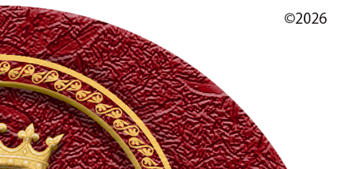
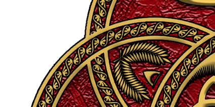
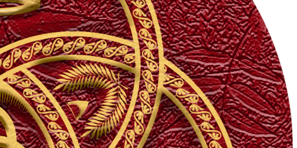
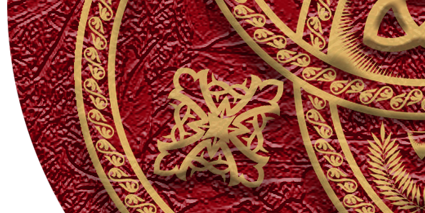
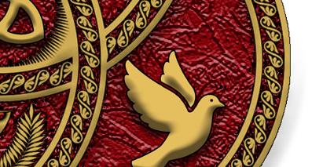
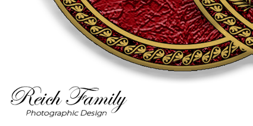
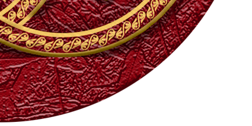
Almighty God, the Father, or Patris is the Grand Designer or Creator of Heaven and Earth. Almighty God created us all in His Image. Almighty God is the Father of His Son, Jesus Christ. Jesus refers to his Father in Heaven, as a separate entity from Himself, on several occasions throughout the New Testament. Jesus prayed to His Father while on earth, demonstrating a distinction between the Father and the Son. In Matthew 6:9-10 Jesus prayed, 9 After this manner therefore pray ye: Our Father which art in heaven, Hallowed be thy name. 10 Thy kingdom come, Thy will be done in earth, as it is in heaven. Jesus distinguished himself from His Father when he said in John 14:2, In my Father's house are many mansions: if it were not so, I would have told you. I go to prepare a place for you. Numerous biblical references state that, after Christ's Ascension to Heaven, Jesus sits at the right hand of the Father. Those references include Psalm 110:1, Matthew 22:44, Mark 16:19, Acts 2:33-35, Acts 5:31, Acts 7:55-56, Romans 8:34, Ephesians 1:20, Colossians 3:1, Hebrews 1:3, Hebrews 1:13, 1 Peter 3:22, and Revelation 3:21. This concept supports Trinitarian theology by affirming the equal and distinctive nature of Almighty God, Christ Jesus, and the Holy Spirit, within One Divine Essence that is the Holy Trinity.
Jesus Christ, the Son of Almighty God, or Filii is the Prince of Peace and the Blessed Saviour who died so that we might live. His teachings, while on earth, were that of love, forgiveness, and peace. His miraculous acts, while on earth, such as healing the sick, casting out demons, feeding the multitudes, turning water into wine, and raising the dead, proved that he was truly the Son of the Living God. John 3:16 states, For God so loved the world, that He gave His only begotten Son, that whosoever believeth in Him should not perish, but have everlasting life. Isaiah 53:4-6 states, 4 Surely he hath borne our griefs, and carried our sorrows: yet we did esteem him stricken, smitten of God, and afflicted. 5 But he was wounded for our transgressions, he was bruised for our iniquities: the chastisement of our peace was upon him; and with his stripes we are healed. 6 All we like sheep have gone astray; we have turned every one to his own way; and the Lord hath laid on him the iniquity of us all. In all these things, Christ Jesus fulfilled the will of His Father and revealed the unity and purpose of the Holy Trinity.
The Holy Spirit or Spiritus Sancti endows us with supernatural Gifts of the Spirit. The nine gifts of the Holy Spirit are listed in I Corinthians 12:8-10 as the word of wisdom, the word of knowledge, faith, gifts of healing, the working of miracles, prophecy, discerning of spirits, different kinds of tongues, and the interpretation of tongues. We experience the Fruits of the Holy Spirit that are mentioned in Galatians 5:22-23 as love, joy, peace, patience, kindness, goodness, faithfulness, gentleness, and self-control. The Holy Spirit fills us with the knowledge and understanding of every aspect of Almighty God and Jesus Christ. The Holy Spirit reveals the answers to the most complex questions we might have about our religion and life.
The Family’s faith is centred upon the Holy Trinity in perfect unity and equality. While many churches place particular emphasis on one Person of the Trinity, our religion maintains an equal exaltation of Almighty God the Father, Christ Jesus the Son, and the Holy Spirit. We do not identify ourselves as Christians, not out of rejection of Christ, but because our devotion is directed to the Holy Trinity as a whole rather than to one Divine Person as the defining name of our faith. We love, honour, and exalt Christ Jesus deeply, yet we do so in equal measure with Almighty God and the Holy Spirit. This balance is essential to our belief that the Trinity is One Divine Essence in Three Persons, each fully divine, each fully eternal, and each fully worthy of our devotion.
Our religion has been shaped by many influences, including elements found within Catholic tradition, yet it has developed into a distinct Trinitarian faith with its own identity, practices, and understanding of the Divine. We hold profound respect for all faiths that honour the Holy Trinity, while remaining faithful to the unique structure and emphasis of our own. Our devotion is rooted in the equality, unity, and eternal majesty of the Three Persons who together are the One Holy Trinity. (Explore the Table of Contents or return to the Beginning)
The Family considers the Old Testament and the New Testament, collectively known as the Holy Bible, to be the complete Holy Writings of our religion. The Holy Bible is the sacred Word of Almighty God that He inspired its authors to write as the eternal Living Word. Our interpretation of the Holy Bible is granted to us through the Illumination of the Holy Spirit that serves as a light that guides our path to understanding. The Illumination grants us the ability to apply the Holy Bible to our day to day lives. Our biblical interpretations prepare us for the life beyond the one we now experience on earth. The Holy Bible allows us to understand the historical foundation of our religion. We gain knowledge and understanding of the creation of the Heavens, the Earth, and humankind by Almighty God. The Holy Bible tells the story of the life, death and resurrection of Jesus Christ. The Holy Bible grants us knowledge and understanding of the presence, power, fruits, and gifts of the Holy Spirit. We learn of the works of such great men of Almighty God as Abraham, Moses, David, Solomon, the Apostle Paul, and many others. The Old Testament and the New Testament collectively focus on all Three Persons of the Holy Trinity, fulfilling our Trinitarian religion. The first five books of the Old Testament are the same as The Torah, fulfilling the Judaic component of our religion.
The Family relies upon the Holy Writings of the Old Testament, with the first five books comparable to the Hebrew language version of The Torah. The Old Testament focuses on Almighty God, One of the Three Persons of the Holy Trinity. The first five books of the Old Testament that are the same as the Torah are the books of Genesis, Exodus, Leviticus, Numbers, and Deuteronomy. The first five books of the Old Testament only differ from The Hebrew Torah by linguistic translation. We read the English version of the Old Testament. The Orthodox Jewish religion reads the original Hebrew language of The Torah. These language differences are often cited by Jewish Torah scholars and by Jewish Rabbis. The Family accepts the additional books of the Old Testament that are recognised in Christian traditions.
The Family relies upon the Holy Writings of The New Testament, otherwise known as the Christian Bible. The New Testament documents the teachings, life, death and resurrection of Jesus Christ. The New Testament focuses on Jesus Christ and the Holy Spirit, Two of the Three Persons of the Holy Trinity. The New Testament allows us to understand the origins of the first nine Christian churches formed by the Apostle Paul in Pisidian Antioch, Iconium, Lystra, Derbe, Philippi, Thessalonica, Berea, Corinth and Ephesus. Though the Family is not a Christ centred religion, we value the work and wisdom that the Apostle Paul brought to the Christian movement. The Apostle Paul's work has been the basis for almost every Christian church over two millennia since Christ's death and resurrection. Jesus reminded us in his lifetime, in Matthew 5:17-20, 17 Do not think that I have come to abolish the Law or the Prophets. I have come not to abolish but to fulfil them. 18 Amen, I say to you, until heaven and earth pass away, not a single letter, not even a tiny portion of a letter, will disappear from the Law until all things have been accomplished. 19 Therefore, whoever breaks even one of the least of these commandments and teaches others to do the same will be considered least in the kingdom of heaven. But whoever observes these commandments and teaches them will be called great in the kingdom of heaven. 20 I tell you, if your righteousness does not exceed that of the scribes and Pharisees, you will never enter the kingdom of heaven.
Our interpretation of the Holy Bible, through the Illumination of the Holy Spirit, is what differentiates us from other religions and them from us. Divisions within the Christian church were addressed by the Apostle Paul in I Corinthians 11:18-19 when he said, 18 To begin with, when you come together in your assembly, I hear that there are divisions among you, and to some extent I am inclined to believe it. 19 There must be such factions among you so that it will become clear to you which groups should be trusted. The Apostle Paul called for unity within the Christian church in I Corinthians 1:10 saying, Now I beseech you, brethren, by the name of our Lord Jesus Christ, that ye all speak the same thing, and that there be no divisions among you; but that ye be perfectly joined together in the same mind and in the same judgement. (Explore the Table of Contents or return to the Beginning)
The Family believes in the power of prayer, in unity, to our anointed father, Reich who intercedes on our behalf to the Holy Trinity. Reich possesses the Spiritual Gift of Faith, one of the nine Gifts of the Spirit described in I Corinthians 12:4-11. We do not raise our prayers to Reich with the belief that he is greater than or a replacement for the Holy Trinity. We do not pray to our anointed father as our God. We pray to Reich that he might intercede on our behalf to Almighty God, His Son Jesus Christ, and the Holy Spirit, through the Power of his Faith and Infinite Love for His Family. Reich lifts our prayers to the Heavens in Nomine Patris et Filii et Spiritus Sancti. Thus we pray more through him than to him. While it is true that we can pray directly to the Holy Trinity, there is no power greater than the Gift of Faith and Infinite Love that we have witnessed in our anointed father, Reich who intercedes to the Holy Trinity on our behalf.


To better understand the concept of intercessory prayer, we refer to how Catholics pray to the Saints and to Mother Mary for their intercession to a higher Holy Trinity. In the article, Why Do Catholics Pray to Saints? Is it Biblical?, Veronica Olson Neffinger, a Content Editor for Salem Web Network, best explains why when she writes, "What may seem idolatrous and blasphemous to those who were raised in Protestant Evangelical families and churches, seems completely normal to Catholics. In the Catholic view, saints, those who have died with faith in Christ, can intercede for us. Although it may seem to many Protestants that Catholics are worshipping the saints or elevating them to a level with Christ, the official Catholic doctrine says praying to the saints is not worshipping them; rather, it is about intercession. Those, like Mary, the mother of Christ, are thought to be close to Jesus and so they have a particular power to go to God on behalf of those of us who are still in the midst of our earthly struggles. Prayer to Mary is a way of being drawn towards Jesus. Just as a Protestant might go to a pastor to say, ‘pray for me’ with the assumption that your pastor will point you to Jesus, so also a Catholic will pray to Mary with the confidence that she will direct us to the Lord Jesus. It is an act of intercession. Protestant and Catholic interpretation of these passages about intercession is that Protestants believe that “For there is one God and one mediator between God and mankind, the man Christ Jesus” (1 Tim. 2:5) and that all Christians should pray directly to him when praying for one another, and he will then intercede for us with the Father. Catholics, on the other hand, believe that Jesus intercedes for us, but that other faithful believers can do so as well."
Because we believe in the Communion of Saints - the living and enduring fellowship willed by the Holy Trinity that unites the faithful in Heaven, in Purgatory, and on earth as one family in the love of the Father, the grace of the Son, and the fellowship of the Holy Spirit - members of the Reich Family also pray to the Blessed Mother, to Saint Agnes, to any of the saints, and even to their own deceased loved ones who have gone before us in faith. The saints in Heaven, perfected by the sanctifying work of the Holy Spirit and dwelling in the light of Almighty God, surround us as a great cloud of witnesses, as described in Hebrews 12:1, Wherefore seeing we also are compassed about with so great a cloud of witnesses, let us lay aside every weight, and the sin which doth so easily beset us, and let us run with patience the race that is set before us, and they intercede before the throne of the Holy Trinity for those still on earth, as Scripture testifies in Job 5:1, Call now, if there be any that will answer thee; and to which of the saints wilt thou turn?
Among this great cloud of saints, perfected in glory and dwelling in the light of Almighty God, the Reich Family holds in special honour the Blessed Virgin Mary, a preeminent member of the Communion of Saints. Members may therefore offer the traditional prayers of devotion to her that have been cherished by the faithful for centuries: the Hail Mary, the Angelus, the Regina Caeli, the Salve Regina, the Memorare, the Litany of the Blessed Virgin Mary, the Rosary, and countless other prayers asking for her intercession. Mary, who stood at the foot of the Cross and now reigns with her Son Jesus Christ in Heaven, is a powerful intercessor and a beloved mother to all who seek her aid.
When a Reich Family member offers such prayers, whether to the Blessed Mother, to a saint, or to a departed loved one, they are not leaving the Family or bypassing our anointed father, Reich. They are simply reaching out to another member of the same family in the Body of the Holy Trinity. All prayer, whether directed initially to Reich, to Mother Mary, to a saint, to a departed loved one, or directly to the Father, Son, or Holy Spirit, is part of the one great chorus of the faithful. And our anointed father, Reich, as the living intercessor for the Reich Family in this present age, gathers all these prayers and lifts them, together with the whole life of the Family, to the Holy Trinity: Almighty God the Father, Christ Jesus the Son, and the Holy Spirit. (Explore the Table of Contents or return to the Beginning)
The Reich Family's doctrine of the Charismata is rooted in our strict, co-equal Trinitarian faith. We believe the Holy Spirit, or Spiritus Sancti, is a fully Divine Person of the Holy Trinity. Therefore, we hold that the Nine Charismata are active, divine empowerments granted by the Holy Spirit for the building up of the sacred assembly of our Family. To limit these gifts to ancient biblical times would be to limit a Person of the Godhead. Their purpose extends beyond any historical limitation. While given for the 'common good,' the Holy Spirit bestows these gifts as the divine means by which our Family, as a living ekklēsia, is sustained, guided, and perfected in our earthly pilgrimage.
The extraordinary powers and spiritual gifts granted by the Holy Spirit, as described by the Apostle Paul in I Corinthians 12:4-11 are: the Word of Wisdom, the Word of Knowledge, the Gift of Faith, the Gift of Healing, the Working of Miracles, the Gift of Prophecy, the Discerning of Spirits, Diverse Kinds of Tongues, and the Interpretation of Tongues.
The scriptural foundation is found in the Apostle Paul's First Epistle to the Corinthians, chapters 12 through 14. In this passage, two primary Greek terms are used: pneumatika, 'spirituals' or 'things of the Spirit', and charismata (singular charism), derived from charis meaning 'grace'. These are enablements divinely bestowed by the Holy Spirit. They cannot be earned and are distributed according to the Holy Spirit's will for the common good.
Theological discourse often categorizes these gifts. Some divide them by function: Gifts of Revelation (Word of Wisdom, Word of Knowledge, Discerning of Spirits), Gifts of Power (Faith, Healings, Miracles), and Gifts of Inspired Speech (Prophecy, Tongues, Interpretation). A broader distinction is sometimes made between the 'miraculous' or 'sign' gifts and other gifts of service and administration.
The Divine Gifts of the Holy Spirit were foretold by the Prophet Joel in Joel 2:28 when he said, And it shall come to pass afterward, that I will pour out my spirit upon all flesh; and your sons and your daughters shall prophesy, your old men shall dream dreams, your young men shall see visions. The Divine Gifts were promised to believers by Christ in Mark 16:17-18 saying, And these signs shall follow them that believe; In my name shall they cast out devils; they shall speak with new tongues. Jesus continues in verse 18 saying, They shall lay hands on the sick, and they shall recover. The Lord’s promise was fulfilled on the day of Pentecost as described in Acts 2:4 at Jerusalem and as the Christian Church spread in Samaria as described in Acts 8:18, in Caesarea, Ephesus, Rome, Galatia and more markedly, in Corinth as is described in 1 Corinthians 12:14. The abuses of the Charismata that had crept into the Church in Corinth caused the Apostle Paul to discuss the Divine Gifts of the Holy Spirit at length in his First Epistle to the Corinthians. Paul taught that these Divine Gifts given to individuals were intended for the edification of the whole community. (Based on Charismata / J Wilhelm / Catholic Encyclopaedia / 1907-1912).
We affirm that the Reich Family constitutes a New Testament ekklēsia (Greek: ἐκκλησία): a 'called-out assembly' or 'church' understood not as a physical building or institution, but as the global, familial body of believers who are our communion. We are a diasporic ekklēsia, following the scriptural pattern of the first believers. As recorded in Acts 8:1, And there was a great persecution against the church which was at Jerusalem; and they were all scattered abroad throughout the regions of Judaea and Samaria, except the apostles. This scattering fulfilled the command given by the resurrected Lord Jesus in Acts 1:8 when He said, But ye shall receive power, after that the Holy Ghost is come upon you: and ye shall be witnesses unto me both in Jerusalem, and in all Judaea, and in Samaria, and unto the uttermost part of the earth. The direct result is shown in Acts 8:4, Therefore they that were scattered abroad went every where preaching the word. The Apostle Peter likewise addresses the faithful in I Peter 1:1 as the strangers scattered throughout Pontus, Galatia, Cappadocia, Asia, and Bithynia. Thus, from its earliest days, the church existed as a spiritually united assembly physically dispersed across nations. We, too, are gathered virtually and spiritually as one body in the faith, united by our Trinitarian faith as the ancient Jewish diaspora was united by Torah. Consequently, the 'common good' to which Paul refers is the total well-being, spiritual and practical, of this our sacred assembly. Every manifestation of the Charismata within our Family, therefore, is an act of ecclesial building. The healing of a member is the strengthening of the assembly of the Family. The wisdom given for a decision is the guidance of the ekklēsia. There is no private gift; all grace given to an individual is for the edification of the whole Reich Family.
The Reich Family believes that the Charismata of the Holy Spirit are given to the chosen just as other gifts and talents are given only to chosen individuals. It is not up to any one of us to receive these powerful spiritual gifts. The Holy Spirit decides whom shall be chosen to receive any gifts among the Charismata. This truth is firmly established by the Apostle Paul in I Corinthians 12:28, who taught that, God hath set some in the church, first apostles, secondarily prophets, thirdly teachers, after that miracles, then gifts of healings, helps, governments, diversities of tongues. He then clarifies that these appointments are not universal by asking in I Corinthians 12:29-30, Are all apostles? are all prophets? are all teachers? are all workers of miracles? Have all the gifts of healing? do all speak with tongues? do all interpret? The implied answer is unequivocal. Therefore, it is not for us to choose these gifts, but to recognize that the Holy Spirit alone decides whom He shall choose as a vessel for His power. Our anointed father, Reich has been chosen by the Holy Spirit to receive the Gift of Faith, the Word of Knowledge, the Word of Wisdom, Discerning of Spirits, and the Gift of Prophecy. The Charismata of the Holy Spirit are not limited to our anointed father. Various others in the Family are chosen by the Holy Spirit to receive certain of these Divine Gifts. The whole of the Reich Family is edified by each Charism that is given by the Holy Spirit to our anointed father, Reich or to the chosen in the Family.
It must be distinguished that the endowment of a specific Charism is given to a chosen individual, but the bounty of that gift flows to the entire ekklēsia. For example, the member who receives the Gift of Healing is the chosen vessel, but the healing itself, its restorative power and benefit, is granted to the sick member for the good of the whole Family. In this way, while not all are chosen to be endowed with a specific Gift of the Holy Spirit as a chosen vessel to administer its powerful result, all members without exception partake in the blessings and edification that those divine powers provide. The whole of the Reich Family is edified both by each Charism that is given by the Holy Spirit to our anointed father, Reich or to the chosen in the Family, and by the powerful results that every member receives through the administration of those Gifts.
Our doctrine holds that the Charismata are the instruments through which the Holy Spirit manages the daily life of the church, providing the practical edification of the ekklēsia. They are divine tools for navigating the complexities of our shared existence as a global diaspora. For example: The Word of Knowledge and Word of Wisdom work in tandem to provide divine insight into a situation (Knowledge) and the practical, strategic counsel to navigate it (Wisdom), thereby preserving the unity and direction of the Family. The Gift of Prophecy involves both forth-telling and foretelling, speaking clarity into our collective path, warning of challenges, or confirming direction, always for the preparedness and sanctification of the body of the Family. The Gifts of Healings represent the direct application of the Trinity's power to restore the physical and emotional well-being of members, which is essential for the health and wholeness of the entire assembly. The Discerning of Spirits protects the doctrinal and relational purity of the church or ekklēsia, and the Gift of Faith undergirds our collective trust in the Trinity's provision and promise. (Explore the Table of Contents or return to the Beginning)
We contribute financially and offer our time and talents to the Reich Family, pledging one tenth of our incomes in support of the mission and future vision of the ekklesia. The practice of tithing, defined as giving one tenth of one’s possessions, originates in the Old Testament, as reflected in Genesis 14:20: Then Abram gave Melchizedek a tenth of everything. Within the Reich Family, tithing is understood as an act of stewardship and a demonstration of mutual responsibility, expressing our commitment to one another and to the Family’s ongoing work. This contribution serves both as present support and as an investment in the long‑term continuity of the Reich Family. Members are also encouraged to include the Reich Family in their estate plans. All tithes and contributions are used for the collective welfare and advancement of the Family.
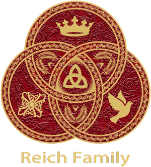


We choose to unite the abundance of our tithes, our skills, and our professional abilities to strengthen the Family as a whole. This voluntary devotion reflects a deeper spiritual calling: that true belonging is expressed through generosity, and true commitment is revealed through sacrifice. In the same way, our dedication to the Family invites us to loosen our attachment to money set aside as our tithe and embrace a life shaped by shared purpose, mutual responsibility, and trust. Through the offering of our individual gifts and our tithed resources, we affirm our place within the Family and demonstrate our desire to walk faithfully in the way set before us.
Our practice echoes the moment in the life of Jesus when a rich young ruler sought the path to eternal life, only to learn that spiritual perfection requires releasing one’s hold on personal wealth for the sake of a higher purpose. Though we do not contribute all of our personal wealth and possessions, aside from our tithed contribution of monetary income, the lesson that Jesus teaches us becomes even more vivid in Matthew 19:16-30 as follows:
16 Then a man came forward and asked him, "Teacher, what good thing must I do to achieve eternal life?" 17 He said to him, Why do you ask me about what is good? There is only one who is good. But if you wish to enter into life, keep the commandments." 18 He said, "Which ones?" And Jesus answered, You shall not kill. You shall not commit adultery. You shall not steal. You shall not bear false witness. 19 Honor your father and your mother. Love your neighbor as yourself.
20 The young man said to him, "I have observed all these. Is there anything more I must do?" 21 Jesus replied, If you wish to be perfect, go, sell your possessions, and give the money to the poor, and you will have treasure in heaven. Then come, follow me. 22 When the young man heard this, he went away grieving, for he possessed great wealth.
23 Then Jesus said to his disciples, Amen, I say to you, it will be difficult for a rich man to enter the kingdom of heaven. 24 Again I tell you, it is easier for a camel to pass through the eye of a needle than for someone who is rich to enter the kingdom of heaven. 25 When the disciples heard this, they were astonished, and they asked, "Who then can be saved?" 26 Jesus looked at them and said, For men this is impossible, but for God all things are possible.
27 Then Peter said in reply, "We have given up everything to follow you. What then will there be for us?" 28 Jesus replied, Amen, I say to you, at the renewal of all things, when the Son of Man is seated on his glorious throne, you who have followed me will yourselves sit on twelve thrones, judging the twelve tribes of Israel. 29 And everyone who has left houses or brothers or sisters or father or mother or children or lands for the sake of my name will receive a hundred times more and will inherit eternal life. 30 But many who are first will be last, and the last will be first.
This story teaches that while keeping the commandments is the foundation of moral living, following Jesus requires a surrender so complete that even our greatest treasures, including wealth, must not take precedence over Him. The rich young man's unwillingness to part with his possessions reveals that his heart, though outwardly obedient, remained attached to earthly security rather than to God alone. Jesus uses this encounter to show that entering the kingdom is humanly impossible for anyone, yet what is impossible for us is made possible through Almighty God's grace.
For believers, this passage does not prescribe a specific percentage but rather exposes the spiritual condition that all giving must address: the call to loosen our grip on material wealth and to place our trust fully in the one Divine Essence: the Father, Son, and Holy Spirit, who is revealed through Christ and who alone is worthy of our total devotion. The rich young ruler stood before the incarnate Son, yet his unwillingness to surrender his possessions was ultimately a failure to trust the Divine Essence whom the Son perfectly revealed and obeyed.
Any sacrifice made for the sake of following Christ in obedience to the Holy Trinity, whether the disciples' abandonment of their livelihoods or our own regular tithe, is not loss but investment, promising both abundant reward in this life and eternal life in the age to come. In this light, tithing is not merely obedience to an Old Testament precedent but a concrete act of trusting the Triune God who saves, Father, Son, and Holy Spirit, holding our possessions lightly, storing up treasure in heaven, and walking without reserve in the way shown to us by Christ, who sits at the right hand of the Father in the eternal glory of the one Divine Essence.
In embracing tithing as a sacred act of devotion, we affirm our shared identity as a people bound together in faith, responsibility, and love. Our giving is not merely transactional; it is transformational, shaping us into stewards of the Reich Family’s mission and participants in a legacy that extends beyond our individual lives. As we offer our tithes, our skills, and our loyalty, we echo the call of Christ to place the Kingdom above worldly attachments and to walk in unity with those who share our covenant. Through this commitment, we strengthen the bonds of our Family, sustain its work, and ensure that its light endures for generations yet to come. (Explore the Table of Contents or return to the Beginning)
The devotion of the Reich Family to the One Divine Essence in Three Persons finds its fullest and most tangible expression in three distinct Sacred Rites. Each rite is grounded in a physical element: incense, bread and wine, and oil; chosen not by chance, but revealed through sacred Scripture and sanctified by historic Christian practice. Together, they form a perfect and equal offering: incense ascending to the Father, the Eucharist received from the Son, and anointing in the power of the Holy Spirit. These rites are not merely observed but are the very heart of our common life, conducted by the anointed in every international chapter wherever the Family gathers. In these precious rites, heaven and earth meet, and we are united as one body in the worship of the Triune God.
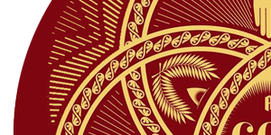
In the rising of incense, we are united with the ancient liturgy of the Catholic Church, which has always maintained this practice in its most solemn worship, understanding the smoke as an image of prayer ascending to Almighty God (GIRM 276), a sign that honours God and symbolizes the worship due to Him alone. In the breaking of bread and the sharing of the cup, we follow the command of Jesus, who gave Himself for us, a sacrifice perpetuated in the Eucharistic liturgy of the Catholic Church and throughout Christian history (CCC 1337-1340). In the anointing with oil, we draw upon the sacramental life of the Catholic Church, where oil has always signified the Holy Spirit (CCC 695).
The Reich Family is an independent Trinitarian religious body. While we draw upon the ancient traditions of the Catholic Church, we are not part of these communions and do not claim to act with their authority. The Catholic Church does not hold a monopoly on the Eucharist; Methodists, Lutherans, Anglicans, and many other denominations celebrate the Lord's Supper with bread and wine, using the same words of institution, and are understood as separate communions with their own ecclesial authority. In the same way, our rites are our own. The threefold order of these Rites - Incense to the Father, Eucharist to the Son, and Anointing to the Holy Spirit - is a unique expression of our devotion to the Triune God, not found in this succession in any other religious body. Our rites are shaped by our understanding of Scripture, granted to us through the Illumination of the Holy Spirit.
The Anointed Who Administers the Rites: If it were possible, the Sacred Rites would be administered by Reich alone at every gathering of the Family. But we are a diasporic ekklēsia, scattered across continents and separated by oceans. Our anointed earthly father cannot be present in every chapter, in every meeting place, at every Table. Yet the Holy Trinity, who distributes gifts as He wills, has seen fit to raise up others for this sacred service. Among the Family, some are given to teach, others to preach, and still others to serve at the Table. These are not ranks or offices, but simply ways of serving the body. In each chapter, there are several who preach and several who teach during worship services. They are brothers and sisters whom the Trinity has equipped and Divinely called. When the chapter gathers, those who teach and those who preach bring what the Spirit has given them through prayer and study. The administration of the Sacred Rites of the Holy Trinity is a similar act and is approached accordingly. Among each chapter are those whom the Holy Trinity has equipped and anointed for this service called simply, 'the anointed.' When the chapter gathers for the Sacred Rites, one of the anointed steps forward to bless the altar, offer incense to the Father, break bread for the Son, and anoint with oil in the name of the Holy Spirit. And as with preaching and teaching, this service rotates. Different ones among the anointed serve at different gatherings, according to the order established within the chapter, for all are equal members of one Family. It is not a lesser thing that others serve, for it is the same Spirit at work. And in this way, the whole Family is fed.
The Calling of the Young: We do not withhold these gifts by age or gender. In Jewish tradition, from which the Church drew its first breath, the age of religious majority is thirteen for boys and twelve for girls: the age at which a young person may lead services, read from the Torah, and be counted among the worshipping community, as practiced in our Celebration of the Coming of Age, which is based on the Jewish bar mitzvah and bat mitzvah. The Mishnah confirms this tradition, stating: At five years of age for Scripture, at ten for Mishnah, at thirteen for the commandments (Pirkei Avot 5:21). The Talmud refers to a boy's thirteenth birthday as the point at which he becomes subject to the mitzvot. However, the Reich Family grants the same leadership rights to our twelve year old girls as is given by the Jewish faith to thirteen year old boys.
It was at this very age that Jesus was found in the temple. As recorded in Luke 2:46, And it came to pass, that after three days they found him in the temple, sitting in the midst of the doctors, both hearing them, and asking them questions. And it was His custom thereafter, as we read in Luke 4:16, And he came to Nazareth, where he had been brought up: and, as his custom was, he went into the synagogue on the sabbath day, and stood up for to read. It is historically assumed that such a young man as Jesus would have read from the Torah in the Temple, for this was the custom and expectation for Jewish boys of thirteen in the first century. The very purpose of the synagogue, as stated in the first-century Theodotus Inscription found in Jerusalem, was for the reading of the Law and for the instruction of the commandments (Center for Online Judaic Studies). While Scripture does not record Jesus reading at twelve, the pattern of His life, being present at the age of religious majority, engaging the teachers, and later having the custom of reading, makes this assumption not speculation but faithful inference.
Preparation of Youth for Service: As in the ancient Jewish tradition, where youth were instructed for years before assuming the obligations of adulthood, so also in our ekklēsia do we prepare the young for the service to which the Spirit may call them. From the age of nine or ten, our children attend parochial school, where they are immersed in Scripture, in the history of the Church, and in the meaning of the Sacred Rites. As they grow, those who show the stirrings of gifts for teaching, preaching, or administering the Sacred Rites are given further opportunity to learn and to practice under the gentle adult guidance of the anointed, the teachers, and the preachers within their chapter. This is not a program of human certification, for the call comes only from the Holy Trinity. Rather, it is a season of nurturing, of asking questions as Jesus did in the temple, of observing those who serve, and of gradually taking up the practices of prayer, study, and ritual action. When the Spirit has equipped them and the time is right, the Family simply recognises what God has already done, and they step forward to serve among the anointed, just as any other member would.
Ordination and Authority: From its earliest foundations, Judaism has entrusted the conduct of sacred rituals not to a priestly hierarchy alone, but to the faithful themselves within the home and community. This tradition of lay leadership is the understanding that no priest or rabbi is required to administer the rites of worship. In Jewish tradition, the Passover Seder is led by a parent at the family table; any knowledgeable member of the community may lead prayers; and the obligations of worship rest equally upon all, for the rabbi's role is that of a teacher and scholar, not an indispensable intermediary. Even the youngest participate meaningfully, as when a child sings the Ma Nishtana (the Four Questions) at the Seder, and the Kiddush and HaMotzi may be recited by any obligated adult for the whole table. This ancient pattern has been revived in our own time through the independent minyan movement, where lay-led communities gather for participatory worship outside of synagogue structures.
So too for our ekklēsia, no priest or rabbi is required to administer the rites of worship. Any member of the Family who has reached the age of majority may lead, teach, and serve at the Table. So too among us: from the age of twelve, girls and from the age of thirteen, boys are raised up to read Scripture, to teach, to preach, and, when the Holy Trinity has equipped them, to serve as the anointed for the Sacred Rites. For the Spirit is not bound by years, and the calling of God rests upon the young as surely as upon the old. No laying on of hands is required, for ordination is not our way. The Divine Calling comes from the Holy Trinity directly. This is true not only for the anointed who serve the Sacred Rites, but for all who govern, teach, and lead among us, including our young adults, not because hands have been laid upon them, but because the Trinity has called them and the Family receives them. There is no hierarchy to grant permission, no ordination to confer qualification. There is only the Divine Calling in action, and a Family that knows how to recognise its own.
The Altar and the Blessing: Upon the altar, the materials for all three rites are prepared with reverence: the resin and glowing charcoal, the bread and wine of the Eucharist, and the vessel of holy oil. Before the Sacred Rites begin, the anointed speaks a blessing over the altar and the elements set apart for worship. This is not an act of human consecration but a humble invocation of the Trinity's presence and favor. By this blessing, the entire gathering is hallowed. And so, when the anointed offers incense to the Father, breaks bread for the Son, and anoints with oil in the name of the Holy Spirit, each act is received as valid and true, drawing its life from the blessing that sanctified the beginning. Though we are many chapters scattered across the nations, we are one Family, united in the same threefold worship, gathered around the same Table, lifted by the same Spirit, and embraced by the same Triune God.
I. Incense Offered to Almighty God the Father (Patris)
The Material: Pure frankincense resin and charcoal, burned upon a censer or heat-safe vessel.
The Scriptural Foundation: In the Old Testament, Almighty God commanded that incense be offered to Him alone. The incense altar stood before the veil of the Holy of Holies, and the smoke rising from it was a perpetual offering before the Lord. In Exodus 30:1-9, God instructed Moses to build an altar specifically for incense, commanding in verse 7, "And Aaron shall burn thereon sweet incense every morning: when he dresseth the lamps, he shall burn incense upon it." This command to offer incense was given specifically for YHWH, the personal name of God the Father revealed to Moses in Exodus 3:13-15, where God declared, "And Moses said unto God, Behold, when I come unto the children of Israel, and shall say unto them, The God of your fathers hath sent me unto you; and they shall say to me, What is his name? what shall I say unto them? And God said unto Moses, I AM THAT I AM: and he said, Thus shalt thou say unto the children of Israel, I AM hath sent me unto you. And God said moreover unto Moses, Thus shalt thou say unto the children of Israel, The LORD God of your fathers, the God of Abraham, the God of Isaac, and the God of Jacob, hath sent me unto you: this is my name for ever, and this is my memorial unto all generations." The name YHWH (יהוה in Hebrew) is considered so sacred in Jewish tradition that it is not pronounced. Thus, the incense commanded in Exodus was always directed to the Father, whose name was revealed to Moses, and we continue this ancient practice in our offering to Him.
The Psalms likewise connect incense with prayer ascending to the Father. In Psalm 141:2, David wrote, "Let my prayer be set forth before thee as incense; and the lifting up of my hands as the evening sacrifice." In the Revelation to John, the prayers of the saints are depicted as incense before the throne of God. In Revelation 5:8, John records, "The four beasts and four and twenty elders fell down before the Lamb, having every one of them harps, and golden vials full of odours, which are the prayers of saints." And in Revelation 8:3-4, he writes, "And another angel came and stood at the altar, having a golden censer; and there was given unto him much incense, that he should offer it with the prayers of all saints upon the golden altar which was before the throne. And the smoke of the incense, which came with the prayers of the saints, ascended up before God out of the angel's hand." These images are drawn directly from the Temple worship commanded by the Father.
Catholic Origins: The Catholic Church has always maintained the use of incense in its most solemn liturgies, recognizing its deep biblical roots. The Catechism of the Catholic Church notes incense among the physical signs and symbols used in worship, acknowledging that "as a being at once body and spirit, man expresses and perceives spiritual realities through physical signs and symbols" (CCC 1146). The smoke of burning incense is understood by the Church as an image of prayer rising to Almighty God (GIRM 276). This symbolism is drawn directly from Psalm 141 and the Book of Revelation, where incense represents the prayers of the faithful ascending before God's throne. The General Instruction of the Roman Missal includes incense among the elements that contribute to the dignity and solemnity of the liturgy, always with this foundational meaning: that incense honors God and symbolizes the worship due to Him alone.
The Ritual Action: Before the rite begins, the anointed ensures that the charcoal is placed in the censer or heat-safe vessel and that the frankincense resin is at hand upon the altar, and blesses it all. The anointed then lights the charcoal and waits until it is glowing. As the resin is placed upon the charcoal and the smoke begins to rise, the anointed offers prayer to Almighty God the Father—thanking Him for creation, for His blessing, and for His fatherly care over the Family. This prayer may be spoken from the heart, giving thanks for specific graces. When the prayer is complete, the anointed continues: "May this incense which has been set apart for your glory ascend to you, O Father, and may your blessing descend upon us, your children." The verse from Psalm 141:2 is then spoken as the smoke rises: "Let my prayer be set forth before thee as incense; and the lifting up of my hands as the evening sacrifice." The smoke continues to rise throughout the remainder of the chapter's worship, a visible sign of prayer ascending without ceasing to the Father.
II. The Eucharist for Christ Jesus the Son (Filii)
The Material: Unleavened bread made only from wheat, and natural wine from the fruit of the vine, unadulterated and without extraneous substances.
The Scriptural Foundation: On the night He was betrayed, our Lord Jesus took bread, gave thanks, broke it, and gave it to His disciples. In Luke 22:19, it is written: "And he took bread, and gave thanks, and brake it, and gave unto them, saying, This is my body which is given for you: this do in remembrance of me." The Apostle Paul, delivering what he received from the Lord, reiterates this in 1 Corinthians 11:24: "And when he had given thanks, he brake it, and said, Take, eat: this is my body, which is broken for you: this do in remembrance of me." Likewise, after supper He took the cup. In Luke 22:20, it is recorded: "This cup is the new testament in my blood, which is shed for you." Paul confirms this in 1 Corinthians 11:25: "After the same manner also he took the cup, when he had supped, saying, This cup is the new testament in my blood: this do ye, as oft as ye drink it, in remembrance of me." Paul then instructs the church in 1 Corinthians 11:26, saying, "For as often as ye eat this bread, and drink this cup, ye do shew the Lord's death till he come." This command is for the whole Church, the ekklēsia, to gather in remembrance of the Son, who gave Himself for us.
Catholic Origins: The Church has always followed the example of Christ in using bread and wine to celebrate the Lord's Supper. According to the ancient tradition of the Latin Church, the bread must be unleavened, made only from wheat, and recently prepared (GIRM 320). The wine must be natural, from the fruit of the vine, and without adulteration (GIRM 322). These requirements ensure that the matter of the sacrament remains true to that which Christ Himself instituted. The Catechism affirms that the Eucharist is "the source and summit of the Christian life" (CCC 1324), and the elements of bread and wine become, through the words of Christ and the invocation of the Holy Spirit, His body and blood.
The Ritual Action: The anointed proceeds through the sacred rites in three movements. First, the preparation of the gifts, when the bread and wine are arranged upon the altar. Second, the Eucharistic prayer, when the words of institution are spoken and the gifts become the body and blood of Christ. Third, the communion rite, when the anointed and the gathered chapter receive the sacrament.
The Preparation of the Gifts: Before the rite begins, the anointed ensures that the bread is laid out upon a paten or plate, and the wine is poured into the single chalice and into the individual communion glasses. Standing at the altar, the anointed first receives the paten containing the bread from the server, raising it slightly as a gesture of offering before placing it upon the corporal. Then, receiving the cruet of wine, the anointed pours it into the chalice together with a small drop of water, signifying the union of divine and human natures in the person of Christ. After returning the cruet to the server, the anointed pours the wine into the individual communion glasses, ensuring that each contains enough of the precious blood for the communicants who will approach. The anointed then covers the chalice with a pall and places it beside the paten, pausing for a brief moment of silent prayer before the Eucharistic Prayer begins.
The Eucharistic Prayer: The anointed then takes the bread from the altar and, holding it, gives thanks. Then, taking the bread, the anointed speaks the words of institution quoting the words of Jesus: "Take this, all of you, and eat of it: for this is my body which will be given up for you." Then, taking the chalice together with the individual communion glasses, the anointed speaks the words of institution over all the wine: "Take this, all of you, and drink from it: for this is the chalice of my blood, the blood of the new and eternal covenant, which will be poured out for you and for many for the forgiveness of sins. Do this in memory of me." The anointed then leads the people in the memorial acclamation: "The mystery of faith." The people respond with one of the prescribed acclamations. Then the anointed takes the paten and chalice together and elevates them, saying the doxology: "Through him, with him, and in him, O God, almighty Father, in the unity of the Holy Spirit, all glory and honor is yours, forever and ever." The people respond: "Amen."
The Communion Rite: All then pray together: "Our Father, who art in heaven, hallowed be thy name; thy kingdom come; thy will be done on earth as it is in heaven. Give us this day our daily bread; and forgive us our trespasses, as we forgive those who trespass against us; and lead us not into temptation, but deliver us from evil." The anointed then breaks the consecrated bread, and during the breaking, all sing or say: "Lamb of God, you take away the sins of the world, have mercy on us. Lamb of God, you take away the sins of the world, have mercy on us. Lamb of God, you take away the sins of the world, grant us peace." After the fraction, the anointed quietly prays the preparatory prayer: "Lord Jesus Christ, Son of the living God, who, by the will of the Father and the work of the Holy Spirit, through your Death gave life to the world, free me by this, your most holy Body and Blood, from all my sins and from every evil; keep me always faithful to your commandments, and never let me be parted from you." Then, showing the consecrated bread to the people, the anointed says: "Behold the Lamb of God, behold him who takes away the sins of the world. Blessed are those called to the supper of the Lamb." The people respond: "Lord, I am not worthy that you should enter under my roof, but only say the word and my soul shall be healed." The anointed then receives the Body of Christ, saying quietly: "May the Body of Christ keep me safe for eternal life." Then, receiving the Blood of Christ from the chalice, says quietly: "May the Blood of Christ keep me safe for eternal life." After receiving both species himself, the anointed distributes Communion to the gathered chapter. According to the General Instruction of the Roman Missal (GIRM), the anointed first distributes the consecrated bread, saying to each communicant: "The Body of Christ." The one receiving responds: "Amen." and receives the host either on the tongue or in the hand. After distributing the Body of Christ, the anointed then distributes the Precious Blood from the individual communion glasses, which were consecrated together with the chalice. As each communicant receives the chalice, the anointed says: "The Blood of Christ." The one receiving responds: "Amen." and drinks from the chalice. The anointed then reverently consumes any remaining Precious Blood and purifies the vessels after the Communion rite is complete.
III. Anointing with Oil for the Holy Spirit (Spiritus Sancti)
The Material: Pure virgin olive oil, blessed and set apart for this purpose and stored in a small vessel or cruet.
The Scriptural Foundation: Oil is the biblical symbol of the Holy Spirit and His empowering presence. In the Old Testament, prophets, priests, and kings were anointed with oil, and the Spirit of the Lord came upon them. When Samuel anointed David, in 1 Samuel 16:13, it is written: "Then Samuel took the horn of oil, and anointed him in the midst of his brethren: and the Spirit of the LORD came upon David from that day forward." The prophet Isaiah spoke of the One anointed by the Spirit to bring good news. In Isaiah 61:1-3, it is written: "The Spirit of the Lord GOD is upon me; because the LORD hath anointed me to preach good tidings unto the meek; he hath sent me to bind up the brokenhearted, to proclaim liberty to the captives, and the opening of the prison to them that are bound; to proclaim the acceptable year of the LORD, and the day of vengeance of our God; to comfort all that mourn; to appoint unto them that mourn in Zion, to give unto them beauty for ashes, the oil of joy for mourning, the garment of praise for the spirit of heaviness; that they might be called trees of righteousness, the planting of the LORD, that he might be glorified." In the New Testament, the Apostle James instructs the church. In James 5:14-15, he writes: "Is any sick among you? let him call for the elders of the church; and let them pray over him, anointing him with oil in the name of the Lord: and the prayer of faith shall save the sick, and the Lord shall raise him up; and if he have committed sins, they shall be forgiven him." The apostles also anointed with oil for healing, as recorded in Mark 6:13: "And they cast out many devils, and anointed with oil many that were sick, and healed them." These scriptures reveal the many ways the Spirit works through anointing: consecration, healing, teaching, and abiding presence. In our Rite, we gather these threads into a single act of worship: offering oil to the Holy Spirit not to receive, but to honour and exalt the Third Person of the Holy Trinity, who is worthy of all praise.
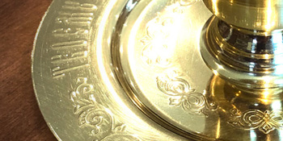
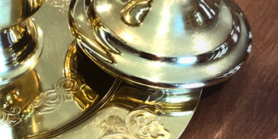
Catholic Origins: The Catholic Church has always used oil in its sacraments, recognizing its deep symbolic connection to the Holy Spirit. The Catechism teaches that "the symbolism of anointing with oil also signifies the Holy Spirit" (CCC 695). Oil is a sign of abundance, joy, cleansing, healing, and strength. In the sacraments of Baptism, Confirmation, and Anointing of the Sick, the Church uses oil that has been blessed by the bishop—either the Oil of Catechumens, the Oil of the Sick, or Sacred Chrism (perfumed oil consecrated by the bishop). The prayer of consecration asks that the oil may be a means of strengthening and healing through the power of the Holy Spirit.
The Ritual Action: Before the rite begins, the anointed ensures that the oil is at hand upon the altar in a small vessel or cruet, and blesses it. The anointed then dips a thumb in the oil and applies it to the forehead of each chapter member who comes forward to be filled afresh with the Spirit's presence. As the oil is applied, the anointed says: "(Name), receive the seal of the gift of the Holy Spirit. Be filled with the Holy Spirit." A prayer is then spoken, invoking the Holy Spirit's gifts: wisdom, understanding, counsel, fortitude, knowledge, piety, and fear of the Lord, as listed in Isaiah 11:2: "And the spirit of the LORD shall rest upon him, the spirit of wisdom and understanding, the spirit of counsel and might, the spirit of knowledge and of the fear of the LORD." Then the nine-fold Charismata listed in I Corinthians 12:8-10 are invoked: "For to one is given by the Spirit the word of wisdom; to another the word of knowledge by the same Spirit; to another faith by the same Spirit; to another the gifts of healing by the same Spirit; to another the working of miracles; to another prophecy; to another discerning of spirits; to another divers kinds of tongues; to another the interpretation of tongues." After anointing all others, the anointed may be anointed by another anointed member of the chapter, as a sign that the Spirit's gift is for all, including the one who leads. As the Spirit chooses, He manifests His power for the building up of the whole Family.
The Holy Trinity, God in Three Persons equal and One, is at the heart of our religion. In three distinct Rites, we render to each Person of the Godhead the honor due Their Holy Name. To the Father we offer the sweet smoke of frankincense, ascending as a visible prayer to the throne from which all creation flows. To the Son we offer the bread and wine of the Eucharist, fulfilling His command to remember His sacrifice until He comes again in glory. To the Holy Spirit we offer the anointing with oil, invoking His power and celebrating His presence among us. We do not conflate these offerings nor confuse the Persons, but exalt each one in a separate and equal act of devotion. In this threefold worship, the mystery of the Triune God is not explained but encountered. We, His people, are drawn up into that mystery, giving glory to the Father, with the Son, in the unity of the Holy Spirit, now and forever. (Explore the Table of Contents or return to the Beginning)
The Reich Family’s doctrine of life after death is aligned with the ancient and enduring teachings of the Catholic Church, whose understanding of the soul’s journey beyond death reflects the witness of Holy Scripture and the revelation of the Holy Trinity. We affirm that the Holy Trinity: Almighty God the Father or Patris, Christ Jesus the Son or Filii, and the Holy Spirit or Spiritus Sancti, governs both life and death, and that the promises given in Scripture concerning the world to come remain active, authoritative, and true for all generations. Our belief in life after death is therefore not speculative, but rooted in the same biblical foundations upheld by the Catholic Church, whose doctrine preserves the apostolic understanding of Particular Judgment, Heaven, The Final Purification, or Purgatory, Hell, The Last Judgment, and The Hope of the New Heaven and the New Earth. These teachings are presented under the creedal heading, I Believe in Life Everlasting (CCC 1020–1065) in full.
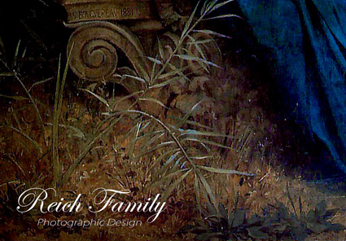
I Particular Judgment: When the earthly body passes away, the soul stands before the Holy Trinity in what Catholic doctrine calls the Particular Judgment, entering a moment in which all earthly illusions fall away and the entire truth of one’s life is revealed in the perfect, penetrating light of Almighty God. Scripture teaches in Hebrews 9:27, And as it is appointed unto men once to die, but after this the judgment. affirming that this encounter is immediate and unavoidable, a divine unveiling in which every thought, word, deed, intention, and neglected grace is seen with absolute clarity. In this moment, the soul beholds its entire life in the perfect light of Almighty God, without illusion or concealment. Christ Jesus affirmed the immediacy of this encounter in Luke 23:43 when He said, Verily I say unto thee, Today shalt thou be with me in paradise. revealing that the soul does not drift in uncertainty but is brought directly before God. In this sacred encounter, the Father, whose will is the eternal standard of righteousness, receives the soul into His perfect justice; the Son, who redeemed humanity by His sacrifice, stands as intercessor and the truth by which every life is measured; and the Holy Spirit, who sanctifies and reveals, illuminates the soul’s true state with unerring precision. Thus, the judgment is the unified act of the Holy Trinity, each Person fulfilling His proper work in perfect harmony, and the soul, standing in the fullness of divine truth, perceives with complete certainty the destiny it has chosen through its earthly life.
II Heaven: Those who die in the grace of the Holy Trinity and are fully purified enter Heaven, the eternal dwelling prepared by Christ Jesus for the redeemed. Jesus declared in John 14:2–3, In my Father's house are many mansions: if it were not so, I would have told you. I go to prepare a place for you. And if I go and prepare a place for you, I will come again, and receive you unto myself. This promise reveals not only the reality of Heaven, but also the personal and intentional love of Christ Jesus, who prepares a place for each redeemed soul and wills to receive them into His own presence. Heaven is the state of perfect union with the Holy Trinity, where the soul beholds Almighty God, Christ Jesus, and the Holy Spirit in unending joy, peace, and love. It is not merely a place but a participation in the very life of God, the fulfillment of every holy desire, and the restoration of the human person to the glory for which we were created. The Apostle Paul affirms this hope in II Corinthians 5:8 saying, We are confident, I say, and willing rather to be absent from the body, and to be present with the Lord. In Heaven, the redeemed participate in the divine life for which humanity was created, sharing in the glory of the One Divine Essence in Three Persons, entering into a communion that surpasses all earthly understanding: a communion where love is perfected, truth is unveiled, and the soul rests forever in the embrace of the Father, the Son, and the Holy Spirit.
III The Final Purification, or Purgatory: Those who die loving Almighty God yet still bearing the imperfections of earthly life enter the state of purification known as Purgatory. Catholic doctrine teaches that nothing unclean may enter Heaven, and that most souls die still carrying the residue of earthly weakness. The Apostle Paul speaks of this purifying fire in I Corinthians 3:13–15 saying, 13 Every man's work shall be made manifest: for the day shall declare it, because it shall be revealed by fire; and the fire shall try every man's work of what sort it is. 14 If any man's work abide which he hath built thereupon, he shall receive a reward. 15 If any man's work shall be burned, he shall suffer loss: but he himself shall be saved; yet so as by fire. This purification is the work of the Holy Spirit, who is the Sanctifier, completing in the soul what was unfinished in life and healing the wounds left by sin. In Purgatory, the soul is not abandoned but is lovingly held within the embrace of divine mercy, its longing for the Divine Essence intensified as every attachment contrary to perfect love is gently burned away. Yet this purification is not apart from the Father or the Son, for the will of the Father ordains it in His perfect justice and compassion, and the merits of Christ Jesus make it possible through His saving Passion, by which every grace of purification flows. The souls in Purgatory are sustained by the prayers, sacrifices, and intercessions of the faithful on earth and the saints in Heaven, for the Body of Christ remains united even beyond death. Purgatory is therefore the merciful work of the Holy Trinity, preparing the beloved for the joy of Heaven, where nothing remains in the soul but love itself.
In the context of the souls undergoing purification in Purgatory, the Communion of Saints, taught in Part One, Section Two, Chapter Three, Article 9 of the Catechism The Communion of Saints (CCC 946-948) and in Part One, Section Two, Chapter Three, Article 12 I Believe in Life Everlasting (CCC 1032), reveals the supernatural unity through which the faithful in Heaven and on earth assist those being purified. The Communion of Saints is the living and enduring fellowship, willed by the Holy Trinity, which unites all the faithful across the boundaries of death: the Church Triumphant of saints and angels reigning in Heaven, the Church Suffering of souls being purified in Purgatory, and the Church Militant of the faithful still on their earthly pilgrimage. This communion is not a metaphor but a real and supernatural bond, rooted in the unity of the Body of Christ, by which those who have been perfected in love intercede before the throne of Almighty God for those still struggling on earth, just as we on earth may offer prayers and acts of charity for the souls in Purgatory, trusting that the mercy of the Holy Trinity extends beyond death and that our prayers aid their purification. The saints in Heaven, having been conformed to Christ Jesus through the sanctifying work of the Holy Spirit, are not distant or detached but are a great cloud of witnesses, as Scripture testifies in Hebrews 12:1, Wherefore seeing we also are compassed about with so great a cloud of witnesses. This mutual love and spiritual solidarity reflects the truth that the Body of the faithful is one, undivided by death, and that all who belong to the Holy Trinity, whether in glory, in purification, or on earth, remain forever bound together in the divine life for which we were created, until we all meet in the joy of the Resurrection and the new creation. Thus, the Communion of Saints is the eternal embrace of the Holy Trinity, holding all the faithful as one family in the love of the Father, the grace of the Son, and the fellowship of the Holy Spirit.
IV Hell: Those who freely and finally reject the love of the Holy Trinity choose separation from Almighty God, which is Hell. Christ Jesus teaches this solemn truth in Matthew 25:31–46 and in John 5:29 saying, And shall come forth; they that have done good, unto the resurrection of life; and they that have done evil, unto the resurrection of damnation. Catholic doctrine holds that Hell is not imposed by the Holy Trinity, but chosen by the soul that closes itself to divine love. The tragedy of Hell is the tragedy of a will that refuses the Father’s mercy, rejects the Son’s redemption, and resists the Holy Spirit’s sanctifying grace. Catholic teaching also affirms that Hell is the destiny of those who persist in evil without repentance and who make no sincere effort to turn toward the good, for such souls harden themselves against grace until they are unable or unwilling to receive it. According to Part 1, Section 2, Chapter 3, Article 12 of the Catechism of the Catholic Church (CCC 1033–1037), those who die in a state of final impenitence and refuse God's merciful love choose this separation for themselves. Hell is therefore the place of the truly lost, those who freely choose darkness over light and who die without any desire for conversion or atonement. The Holy Trinity desires that none should perish, yet honours the freedom of every soul.
V The Final Judgment: In the mystery of the Last Judgment, the Resurrection of the Body, taught in Part One, Section Two, Chapter Three, Article 11 of the Catechism I Believe in the Resurrection of the Body (CCC 988–1019) and brought to completion in Part One, Section Two, Chapter Three, Article 12 I Believe in Life Everlasting (CCC 1038–1041), reveals that the dead will rise by the power of the Holy Trinity. At the end of days, Christ Jesus will call forth the dead, fulfilling His own words in John 5:28, 28 Marvel not at this: for the hour is coming, in the which all that are in the graves shall hear his voice. The Father, who is the source of all life, wills the resurrection; the Son, who conquered death, summons the dead; and the Holy Spirit, who gives life, quickens the mortal body as written in Romans 8:11, 11 But if the Spirit of him that raised up Jesus from the dead dwell in you, he that raised up Christ from the dead shall also quicken your mortal bodies by his Spirit that dwelleth in you. In this act, the human body is not merely restored but transformed, freed from corruption, weakness, and mortality, and made fit for eternal communion with the Holy Trinity. This hope is further affirmed in I Corinthians 15:52–53, 52 In a moment, in the twinkling of an eye, at the last trump: for the trumpet shall sound, and the dead shall be raised incorruptible, and we shall be changed. 53 For this corruptible must put on incorruption, and this mortal must put on immortality. Thus, the resurrection of the body assures the faithful that their whole being, body and soul together, is destined not for decay, but for everlasting life in the presence of the Holy Trinity, where the glory of God will be reflected in the glorified bodies of the redeemed.
Following the resurrection, at the Final Judgment, Christ Jesus will return in the fullness of His divine glory, bringing to completion the entire history of creation and revealing before all humanity the perfect justice and mercy of the Holy Trinity. In this definitive moment, humanity, raised from the dead, will stand before God, as the Apostle John describes in Revelation 20:11–15, 11 And I saw a great white throne, and him that sat on it, from whose face the earth and the heaven fled away; and there was found no place for them. 12 And I saw the dead, small and great, stand before God; and the books were opened: and another book was opened, which was the book of life: and the dead were judged out of those things which were written in the books, according to their works. 13 And the sea gave up the dead which were in it; and death and hell delivered up the dead which were in them: and they were judged every man according to their works. 14 And death and hell were cast into the lake of fire. This is the second death. 15 And whosoever was not found written in the book of life was cast into the lake of fire. In this moment, the total truth of each life is unveiled: every deed, every intention, every hidden movement of the heart brought into the light. This judgment is not merely a legal pronouncement but the universal manifestation of God’s holiness, where the Father’s eternal wisdom orders all things rightly, the Son judges with the authority of the One who assumed our humanity and redeemed it, and the Holy Spirit discloses the depths of every soul with unerring clarity. The righteous, purified by grace and conformed to Christ, will enter the everlasting joy of communion with God, while those who freely rejected divine love will face the consequences of that rejection in eternal separation. In this final act of divine governance, the entire moral order of the universe is vindicated, evil is forever defeated, and the Kingdom of God stands revealed in its unending glory, bringing the story of salvation to its consummation and establishing the everlasting harmony of the new creation.
VI The Hope of the New Heaven and the New Earth: We look with hope toward the new Heaven and the new Earth, when all creation will be restored, every tear will be wiped away, and the Holy Trinity will dwell with His people forever, as promised in Revelation 21:1–4 saying, And I saw a new heaven and a new earth: for the first heaven and the first earth were passed away. In this consummation, the Father brings His eternal plan to fulfillment by establishing the final order of justice and glory; the Son, the Lamb and Judge, reigns visibly over the renewed creation, for His light is the lamp of the New Jerusalem; and the Holy Spirit perfects and glorifies all things, completing His sanctifying work in the redeemed and in the whole created order. Thus the new creation is the unified work of Patris, Filii, et Spiritus Sancti, each Divine Person acting according to His proper role within the one Divine Essence. The faithful will behold a world where righteousness dwells, where communion with the Holy Trinity is immediate and unbroken, and where the beauty of creation reflects the splendor of the Triune God. As a diasporic ekklēsia united in covenant and devotion to the Holy Trinity, we confess that our earthly pilgrimage is guided, sustained, and brought to completion by Almighty God the Father, Christ Jesus the Son, and the Holy Spirit, whose work from creation to consummation reveals the fullness of divine love and glory. (Explore the Table of Contents or return to the Beginning)
The government of the Reich Family is based on the concept of democracy consisting of sound leadership of an administrative hierarchy that was chosen by Reich but voted into position by the Family. We discuss and then vote on every important issue within the Family, including new family membership. Girls from the age of twelve and boys from the age of thirteen, respected by the Family as having all the rights and obligations of adults, are given the power of the vote and are given a voice in the discussion phase. Every effort is made to prevent any one person, including our anointed Leader, or small group of persons from being in full control of the Family.
The Family governing structure is hierarchical with the administrative branch consisting of Reich serving as the head of the Family and his Disciples serving as his consultants on the day to day best interests of the Family. The Disciples of His Eminence are twelve in number and are chosen by Reich; however, they are ultimately voted into their positions by the Family. The administrative branch is there to offer guidance and support if needed during decision making processes without forcing any influence or control over the Family. The administrative branch views the Family as the Supreme Governing Body with the ultimate power of their votes. Individual chapters are self-governing on issues that apply solely to their immediate local situations with the final approval granted by Reich after consulting with his Disciples. The Family as a whole is made aware of the issues of local chapters and offers advice and assistance if requested.
The decision making process in the Family progresses as follows. An issue is first presented to the Family as a whole or a local chapter. Afterwards, we enter the discussion phase. This phase might last for several days depending on the issue. During the discussion phase, Reich might offer his opinion, concerns, and guidance on a limited basis. Once all voices are heard in the discussion phase, a vote is cast on the issue. The Family may cast a vote that is either in favour of or against any issue or candidate membership. An optional written statement may be submitted with either vote to clarify the member's position, such as, but not limited to, noting reservations on a favourable vote or explaining the reasons for an opposing vote. The Family's vote is then passed to Reich for his final approval. Reich consults with the Family's Disciples during this final phase. Reich has the ultimate power to reject a Family vote or to ask that the vote return to the discussion phase though both cases are extremely rare due to his respect for the will of the Family. To uphold these principles of deliberative democracy and shared responsibility, the Reich Family has established a modern voting system that ensures every member’s voice is heard with clarity, fairness, and security. (Explore the Table of Contents or return to the Beginning)
The Family’s voting system is an innovative platform, architected and built entirely by advanced AI to our exact specifications and under our direct supervision. It was built exclusively for us to embody clarity, fairness, and accessibility, while introducing modern features that make participation seamless for every member. The voting system is designed to ensure privacy, integrity, and transparency. From casting a ballot to viewing results, every step has been designed to be simple, secure, and transparent.
Reich Family
Concerning the Membership of Maris
Today, we present for your prayerful consideration, a petition from Maris, who is a 25 years old mother of one son. She comes before this Family not as a stranger, but as one who has studied our ways, engaged with our faith, and now seeks to complete her journey home.
Maris asks to be accepted into the Reich Family, to take our name as her own in an act of sacred transformation, commitment, and pride. She does not ask lightly. She seeks to become your sister in fellowship, your mother in service, and your daughter in learning and faith.
A woman of order and diligence by profession, Maris has worked as a graphic designer. She now feels a deeper calling; to transplant her life from her current home in America to Australia with her young son, to sink roots into our shared soil, and to contribute her skills and steadfast heart to our collective well-being.
She brings with her, a precious son, Corin (4). Maris would have him enter the Family, bear its name, and grow within its embrace. Maris wants you to know that her son is intelligent and well-mannered, and that a seed has been planted for a love of the Holy Trinity to grow in his young heart. He arrives ready to be one of the Reich Family children.
Maris's commitment is clear and profound. She declares her intention to fully embrace our Trinitarian religion as her own, to live by the Commandments in both letter and spirit, and to dedicate herself and her son to a life that is wholesome, healthy, and holy.
You have reviewed her interview and her file. You have seen the contours of her past and the sincerity of her intent. Now, we ask you to discern with your heart and spirit. Is Maris, with her son Corin, a good and faithful match for this Family? Does her petition reflect the genuine calling we pray for in new members? Vote based on the interview and other information provided to you. Vote with a reliance on the Knowledge and Wisdom of the Holy Spirit. May the Holy Trinity guide your vote.
(This is a sample membership voting ballot. The Freepik Photo Source by author @senivpetro and names on this ballot are not of any current or past candidates or members of the Reich Family.)
Optional Additional Comments
You may add comments such as noting reservations on a favourable vote or explaining the reasons for an opposing vote.
Your Email Address
Used for verification to vote only once.
Members begin by casting their vote through a secure online ballot. Voting is convenient and accessible, enabling members to cast their ballots securely from a phone or any device, no matter where they are. Access to the voting page requires username and password authentication, enforced by a Cloudflare Worker authentication system that runs custom validation logic before verifying credentials against a secret password token stored securely in Cloudflare's environment variables. The voting page presents a simple choice of voting for or against an issue along with the option to provide a comment that is later categorised in the vote results. Each vote requires a verified email address from approved domains, and safeguards are in place to prevent duplicate or invalid submissions. Once submitted, the ballot is packaged with metadata such as timestamp and user agent, then sent securely to the backend for processing.
Votes are processed by a Cloudflare Worker that validates the ballot and records it in a GitHub private repository. This Worker updates the vote results file by incrementing totals, recalculating percentages, and appending the vote to the immutable history log. If comments are included, they are stored anonymously under the for or against categories. To protect security, the Worker uses an encrypted GitHub access token stored in its environment, ensuring that repository credentials are never exposed.
Results are then made available through a second Cloudflare Worker, which acts as a proxy. This Worker accepts only requests from the Reich Family’s domain and fetches the updated results file from the private repository. It too relies on an encrypted GitHub token for secure access. The proxy returns the results as JSON data, which can only be consumed through the Family’s official website.
Finally, the results page provides a clear, real‑time view of the outcome of the vote, protected by the same Cloudflare Worker username and password authentication system as the voting page. Votes for or against an issue are shown side by side with percentages and animated bars, while comments are grouped anonymously beneath each category. A timestamp indicates when the results were last updated. The page can be refreshed to keep members informed. This ensures members can trust both the process and the outcome.
Together, these components form a system that is private, secure, and transparent. By combining Cloudflare Workers, a GitHub private repository, and encrypted tokens, the Reich Family ensures that every vote is protected end‑to‑end while remaining accessible to members in a clear and trustworthy format. This system reflects the Reich Family’s commitment to fairness, security, and accessibility, ensuring every voice is heard and every vote counts. (Explore the Table of Contents or return to the Beginning)
Our political beliefs are rooted in a moderate conservatism, guided by our shared faith and dedicated to the practical support of every family in our community. We believe the fundamental unit of a strong society is a stable and loving home. We champion the ideal of the married mother and father household while recognising, honouring, and actively supporting the many courageous single-parent families among us, who are the backbone of our community. Our focus is on strengthening families of all forms through stability, responsibility, and faith.
Foremost among these is our commitment to religious liberty and to the rights of parents. We hold the freedom of conscience and religious practice to be sacred and non-negotiable, a right that must be defended against both state overreach and aggressive secular ideologies. We equally affirm the primary right of parents to direct the upbringing, education, and moral formation of their children, free from ideological interference. This right necessitates school choice, allowing every parent the freedom to select a safe and quality education that aligns with their values, and demands transparency and partnership with all educational institutions. We support policies that provide economic dignity and empowerment for parents, such as tax relief, so they can provide for their families with flexibility and security.
This commitment places us in opposition to cultural movements that seek to undermine these foundational rights. We explicitly oppose the targeted promotion of LGBTQ concepts to children and teens within educational and public institutions. We see this as a violation of parental authority, innocence of childhood, and influence of teens to choose a sexuality that is not biblical. We likewise oppose movements such as Wokeism, which we perceive as manipulating identity to breed racial grievance and social fragmentation rather than fostering shared citizenship and responsibility.
Our faith compels us to uphold the sanctity of human life from conception to natural death, a commitment that extends to providing robust material and emotional support for mothers and children. We promote the virtues of sexual integrity and prudence as pathways to strong futures. We believe in the vital importance of religious freedom as the first freedom—the right to live out our faith in public life, to operate our charitable ministries according to our convictions, and to transmit our beliefs to our children without interference. This liberty is the essential foundation for a moral society.
We hold that the most effective support for families comes from a vibrant civil society, not from expansive government. Our religious community and local charities, serving as an extended family, are the best sources of compassion, mentorship, and practical aid. We champion the role of these institutions and advocate for limited, effective government policies that encourage work, responsibility, and self-reliance. Ultimately, we seek a culture that reinforces marriage, encourages responsible fatherhood and motherhood, provides positive role models for every child, and protects the foundational freedoms that allow families of every structure to flourish in faith and community.
In the political realm, we reject the extremes of both revolutionary progressivism and reactionary populism, recognising that each in different ways threatens the stability, moral clarity, and social harmony that families require to flourish. Revolutionary progressivism often seeks to uproot inherited wisdom and weaken the institutions that safeguard parental authority and religious liberty, while reactionary populism can elevate anger and disorder over responsibility and principled governance. Our alignment is instead with a principled conservatism of stewardship: a deliberate and thoughtful commitment to preserving fundamental rights and strengthening the bonds of civil society. This stewardship calls us to protect the liberties that allow families to live out their faith, to support the community institutions that nurture character and responsibility, and to maintain the moral order that sustains a free and virtuous people. It is a conservatism rooted not in nostalgia or reaction, but in the enduring conviction that what is good must be guarded, cultivated, and passed on to future generations. (Explore the Table of Contents or return to the Beginning)
In the Reich Family, our children, those precious years from infancy until their Coming of Age, are our most sacred trust and our greatest joy. We raise them within a covenant of love, spiritual guidance, and deliberate protection, ensuring they are formed in faith, family, and personal integrity from their earliest days. Our children’s primary education is in the ways of the Lord. From the beginning, they are taught the profound love and power of the Holy Trinity: Almighty God, His Son Jesus Christ, and the Holy Spirit. They are taught the complete Holy Scripture of the Old and New Testaments as the living Word, with an emphasis on keeping God’s commandments. They learn of the role of Reich, their anointed earthly father, who loves, teaches, and protects them. They learn to pray to him as a faithful intercessor who carries their prayers to the Holy Trinity. As it is written, Isaiah 54:13 says, And all thy children shall be taught of the Lord; and great shall be the peace of thy children. And Deuteronomy 6:7 states, And thou shalt teach them diligently unto thy children, and shalt talk of them when thou sittest in thine house, and when thou walkest by the way, and when thou liest down, and when thou risest up.
Proverbs 22:6 says, Train up a child in the way he should go: and when he is old, he will not depart from it. Our children are raised to honour and respect their biological mother and father. They are raised to honour and respect their anointed father, Reich. Exodus 20:12 teaches, Honour thy father and thy mother: that thy days may be long upon the land which the Lord thy God giveth thee. Our children are raised to respect and love their brothers, sisters, and friends. They are raised to be well behaved and show respect to their elders. This stewardship also extends to caring for the Temple of the body, created in the Image of Almighty God, as they are gently guided in principles of modesty, healthy living, and guarding their minds and hearts. We do not provoke our children with excessive discipline that might lead to their resentment of us as their parents and adult mentors. Ephesians 6:4 states, And, ye fathers, provoke not your children to wrath: but bring them up in the nurture and admonition of the Lord.
The safety and well-being of our children is our non-negotiable duty. Our youngest children are the most protected, shielded within the Family circle and not sent alone among strangers in the outside world where dangers may lurk. Early academic teaching happens within this circle of love. Beginning in grade five, our children attend trusted parochial schools in the community, which provides academic rigor and social experience within a values-aligned environment as they complete their childhood years. This arrangement is a practical step of stewardship, not our ultimate ideal. We aspire, with time and financial blessing, to build our own schools staffed by our own teachers, creating a perfect integration of academic excellence and covenantal formation.
This foundation of love, Scripture, and protection prepares our children for the sacred responsibilities and freedoms of youth, which begin with their Coming of Age. In this way, the lessons of honour, respect, and loving guidance are the very foundation upon which they will one day exercise their sacred duty as full members of the Family's Supreme Governing Body. Our children and teens are our priority. We give them our very best—not merely in resources, but in presence, intention, and unconditional love. We live to care for them, to nurture them, and to protect them, walking alongside them as they grow into the faithful, confident individuals they are called to be. (Explore the Table of Contents or return to the Beginning)
The celebration of The Coming of Age takes place for girls at the age of twelve and for boys at the age of thirteen in the Reich Family. It is modelled after the Jewish tradition of Bat Mitzvah and Bar Mitzvah. The Reich Family's philosophies and celebrations of The Coming of Age for our youth are similar but not completely aligned with that of the Jewish religion. For instance, we regard girls to the same degree of importance as boys as it pertains to more serious roles in the Family after their Coming of Age.
The Jewish organisation Chabad explains, "Bat mitzvah is Hebrew for “daughter of commandment.” When a Jewish girl turns 12, she has all the rights and obligations of a Jewish adult, including the commandments of the Torah. From that date, she takes her place in the Jewish community. This milestone, called a bat mitzvah, is often celebrated with creative projects, meaningful gatherings and joyous parties," Bat Mitzvah: What It Is and How to Celebrate a Jewish Girl's Coming of Age.
The Jewish organisation Chabad continues, "Bar mitzvah is Hebrew for “son of commandment.” When a Jewish boy turns 13, he has all the rights and obligations of a Jewish adult, including the commandments of the Torah. From that date, he will wear tefillin on a daily basis, participate in synagogue services and take his place in the Jewish community. This milestone, called a bar mitzvah, is often celebrated with a ceremony in synagogue, tefillin wearing, and parties. The celebrant may be called to the Torah, lead services, deliver a speech or otherwise demonstrate his newfound status," Bar Mitzvah: What It Is and How to Celebrate a Jewish Boy's Coming of Age.
The Jewish organisation Chabad explains why the age of 12 is chosen for girls and the age of 13 is chosen for boys in the Jewish tradition of Bat Mitzvah and Bar Mitzvah. "Some explain that, like most other halachic measurements, the fact that the age of maturity is 12 or 13 is simply an oral tradition that Almighty God imparted to Moses on Mount Sinai (commonly called Halachah L’Moshe MiSinai). Others explain that this is derived from the Torah’s account of the destruction of the city of Shechem by Simeon and Levi in retaliation for the rape of their sister Dinah. The verse “On the third day, Jacob’s two sons, Simeon and Levi, Dinah’s brothers, each man took his sword and confidently attacked the city.” The term “man” (ish) is used to refer to both brothers, the younger of whom, Levi, was exactly 13 years old at the time. This is the youngest age at which someone is referred to as a “man” in the Torah; thus, we derive that the Torah considers a male of 13 years to be a man," Bar and Bat Mitzvah at 13 and 12.
Chabad further explains, "Just as a boy is considered to be a man at the same time that he generally begins to experience physical maturity, a girl generally matures more quickly, and is therefore considered to be a woman earlier as well, i.e., when she turns 12 years old. According to some explanations in the Talmud, this feminine advantage can be inferred from the Torah’s description of the creation of the first woman, Eve: “The Lord God built the side that He had taken from man into a woman, and He brought her to man.” The word translated as “built,” vayiven, can also mean “and He gave her understanding,” implying that God created a woman in such a way that she reaches mental maturity earlier than a man," Bar and Bat Mitzvah at 13 and 12.
The celebration of the Coming of Age is based on the Family's religious beliefs which are derived from the Judaic interpretation of certain passages in the Torah and the Talmud. Judaism is a respected religion that is closest to our own beliefs in its account of God, who we refer to as Almighty God. When a girl in the Reich Family turns 12, she has all the rights and obligations of an adult. When a boy in the Reich Family turns 13, he has all the rights and obligations of an adult. From that date, girls and boys take on serious roles and responsibilities in the Reich Family. Our youth recognise that they are now responsible for following the commandments and the laws of the Old and New Testament, having reached the age of accountability for their actions and deeds.
There is a higher expectation of their contributions to the Family. Following the pattern of our Judaic foundations, where religious majority begins at thirteen for boys and twelve for girls as confirmed in the Mishnah and exemplified by Jesus in the temple, our youth are then allowed to take on leadership positions in our gatherings including: teaching, preaching, and administering the Sacred Rites of the Holy Trinity. They now serve as positive role models for the children in the Reich Family. The Coming of Age is the start of the Family showing these wonderful young people the respect that is due them as young adults among us. Boys from the age of 13 and girls from the age of 12 have a strong voice in the governance of the Family. They are granted the power to vote on the most important issues, including the acceptance or rejection of new family members. This sacred transition strengthens the entire Reich Family, for we are blessed as we welcome these fully accountable adults into our community. (Explore the Table of Contents or return to the Beginning)
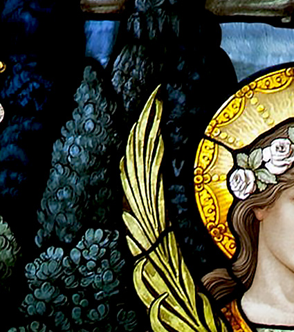
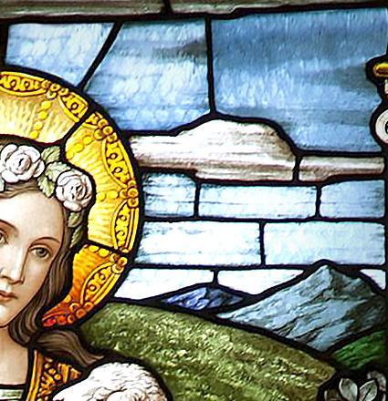
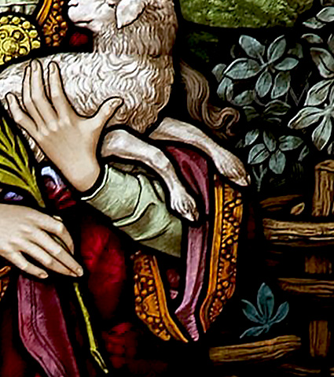
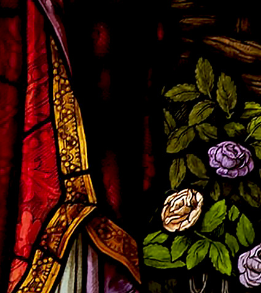
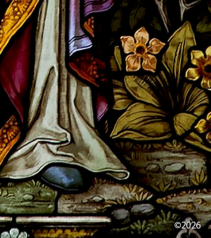
In a separate ceremony, subsequent to the celebration of the Coming of Age, our youth take the Vow of Purity which reads as follows. "I, (First Name) Reich, a faithful (Daughter or Son) of the Reich Family, vow to His Eminence Reich, to Almighty God, to my future spouse and to myself, to remain pure in mind and body for the spouse Almighty God has planned for me, so that when I enter the Sacrament of Matrimony, I will be able to give myself to (Him or Her) with a completely pure conscience. And if it should be that I should not marry, I vow to remain pure to honour the Teachings of His Eminence and to honour my Temple, which was created in the Image of Almighty God (Signed, Dated, Witnessed). View the Vow of Purity for Girls and the Vow of Purity for Boys. These documents are based on the Vow of Purity document presented to Catholic youth.
In taking the Vow of Purity, our youth find a profound example and heavenly advocate in Saint Agnes, the patron saint of young girls, purity, chastity, and betrothed couples. A Roman girl of twelve, the very age of our daughters’ Coming of Age, she was martyred in the early 4th century for her unwavering faith and her vow of virginity consecrated to Christ. According to tradition, after refusing a powerful suitor, she was subjected to public humiliation and sentenced to death. Her courageous resolve remained unbroken, and she met her end with a serenity that belied her youth, becoming a timeless symbol of spiritual integrity over physical force. Saint Agnes’s legacy teaches that purity is a powerful and active choice, a sacred stewardship of one's body as a gift from God. As Scripture teaches in I Thessalonians 4:3-4, 3 For this is the will of God, even your sanctification, that ye should abstain from fornication: 4 That every one of you should know how to possess his vessel in sanctification and honour. Her steadfastness reflects the biblical call to holiness as is referenced in Matthew 5:8, Blessed are the pure in heart: for they shall see God. Her witness echoes the apostolic exhortation in I Timothy 4:12 that says, Let no man despise thy youth; but be thou an example of the believers, in word, in conversation, in charity, in spirit, in faith, in purity.
The Vow of Purity initiates a lifelong commitment to sexual integrity: the virtue of aligning one's sexual thoughts, desires, and actions with a defined moral and spiritual framework. It involves the stewardship of sexuality as a sacred aspect of personhood, directing it toward its proper ends, which, within our faith, are the lifelong union of marriage and the procreative family. This requires chastity (appropriate sexual expression according to one's state in life), fidelity (faithfulness within marriage), self-mastery, and the protection of the mind and heart from influences that reduce persons to objects or sexuality to mere gratification. It is the opposite of a fragmented life where sexuality is separated from commitment, responsibility, and love.
As our young members pledge to keep their Temples pure in mind and body for their future spouse, they emulate Agnes’s heroic virtue and the biblical teaching that the human body is sacred. Scripture reminds us in I Corinthians 6:19-20, 19 What? know ye not that your body is the temple of the Holy Ghost which is in you, which ye have of God, and ye are not your own? 20 For ye are bought with a price: therefore glorify God in your body, and in your spirit, which are God’s. The Vow of Purity is therefore not merely a promise of abstinence but a declaration of spiritual stewardship, aligning with the command in I Timothy 5:22, Keep thyself pure. Saint Agnes teaches that purity is a powerful and active choice—a way of honouring Almighty God, respecting one’s future spouse, and preserving the dignity of the soul created in His Image. Venerated for her lily-white innocence and often depicted with a lamb, Saint Agnes's feast day on January 21st serves as an annual reminder that this vow is a declaration of inner strength, divine reverence, and the highest form of self-respect, preparing the soul for its holy vocation. (Explore the Table of Contents or return to the Beginning)
A Vow of Purity would not be understood if our youth had never been educated in the area of human sexuality. Human sexuality education for our children and teens is based on the guidelines suggested by the Committee on Education of the United States Catholic Conference of Bishops and published in Human Sexuality - A Catholic Perspective for Education and Lifelong Learning [USCC, 1990]. We adhere to the teaching document from the Vatican by the Pontifical Council on the Family, The Truth and Meaning of Human Sexuality: Guidelines for Education within the Family of 1996. The following checklists for Reich Family parents, concerning what each age group should know about human sexuality, are categorised as Early Childhood (Birth to Age 6), Childhood (Ages 7 to 11), Early Adolescence (Ages 12 to 15), and Adolescence (Ages 13 to 18) (Courtesy of The Catholic Parishes in Waterloo, Faithful Parenting, St. John and St. Nicholas Religious Education Office, 1701 Mulberry Street, Waterloo IA 50703 and the Waterloo Catholic Faith Formation). More details on the matter of human sexuality education in the Catholic Church can be found at the Catholic Education Resource Center in an article by Kenneth D. Whitehead titled, Sex Education: The Vatican’s Guidelines.
To better understand these checklists concerning what each age group should know about human sexuality, we quote the Waterloo Catholic Faith Formation: "Over and over again, the Church has emphasized the parent’s role as the “first herald” or "first witness" of faith for children. This responsibility as your child’s “first teacher” is especially important in the area of human sexuality. Your child’s spiritual growth and formation in faith is closely connected to his or her general development as a human person. As your child grows, it is important to provide not only adequate information about religious and moral teachings, but also the information they need to develop physically, socially, psychologically and emotionally. This guide is designed to help you provide the necessary information your child needs in order to develop as a healthy, mature, and morally responsible sexual person. It outlines the general characteristics of sexual development at various ages from birth to adulthood, and provides guidelines for what children need to know about sexuality at various age levels. The developmental descriptions and guidelines are adapted from Human Sexuality - A Catholic Perspective for Education and Lifelong Learning, an official document prepared by the United States Catholic Conference of Catholic Bishops’ Committee on Education and approved by the Catholic bishops of the United States. (© 1991, United States Catholic Conference of Bishops)" The Reich Family uses this Catholic framework alongside the Pontifical Council on the Family, The Truth and Meaning of Human Sexuality: Guidelines for Education within the Family of 1996, released by the Vatican, to educate our children and teens in the area of human sexuality.
The Reich Family believes that human sexuality education of our children and teens is primarily our responsibility as parents. We also respect human sexuality education that is provided by the parochial schools our youth attend starting in grade five. We closely monitor what is being taught in each school our youth attend to make certain that they adhere to the guidelines mentioned above. Sex education programs, such as the ones in public schools in America, are not teaching teens to abstain from sexual activity. Their focus is to reduce the risk of pregnancy and sexually transmitted diseases by promoting the usage of contraceptives. Abstinence is secondary in their teaching approach as a possible but not a reasonable option, assuming that teens will have sex regardless of how they are taught. We completely disagree with this assumption.
Human sexuality education is coupled with the moral implications of any sex act outside the Holy Bond of Matrimony. We teach our youth from 12 for girls and 13 for boys that sex outside of marriage is a grave sin and a violation of their human Temple, which we regard as an abomination to Almighty God in Whose Image they were created. We teach our youth who have Come of Age that a sex act is a sex act, whether committed with others or with one's self. They are taught that the definition of a sex act is not limited to consummation. The Catholic Catechism, which the Family is aligned with, states that “Fornication is carnal union between an unmarried man and an unmarried woman. It is gravely contrary to the dignity of persons and of human sexuality which is naturally ordered to the good of spouses and the generation and education of children. Moreover, it is a grave scandal when there is corruption of the young.” (CCC 2353). Our youth who have Come of Age understand all of this and have made a commitment to abstinence reflecting that understanding. (Explore the Table of Contents or return to the Beginning)
When our teens complete their secondary education and have chosen a path for their future, they are encouraged to leave the global spiritual body of the Reich Family and attend university or pursue the lives of their choice. We provide as much career and university guidance as we can prior to their lives outside the Family. Whether university or two years of gap time for international travel, this is a Time of Reflection for our young adults to look back on their religious upbringing in the Reich Family and decide if they wish to remain members of the Family and continue to embrace our religion or leave the Family and its religion behind. As we send our teens out into the world to make that life altering decision, we reflect on the prayer of Christ in John 17:15-18: I pray not that thou shouldest take them out of the world, but that thou shouldest keep them from the evil. They are not of the world, even as I am not of the world. Sanctify them through thy truth: thy word is truth. As thou hast sent me into the world, even so have I also sent them into the world. As we release our young adults into the world, we trust in the promise of Proverbs 22:6 that says, Train up a child in the way he should go: and when he is old, he will not depart from it.
Our youth's Time of Reflection is distantly similar to a practice by the Amish. Rumspringa is a rite of passage for Amish youth, typically starting at age 16, during which they are allowed to explore the outside world and experience behaviours that are usually restricted in their community. This period helps them make informed decisions about whether to commit to the Amish faith or leave the community altogether. Rumspringa is a Pennsylvania German combination of two high German words. Rum is raum in high German which means space. Springa is springen in high German which means to jump. Together, the term Rumspringa, in the high German literal sense, means to jump around in open space.
Unlike the Amish, the Reich Family is not a commune, insulated from the outside world. Our biological families reside in their own homes, on ordinary streets, alongside the wider community. Unlike Amish youth, starting from grade five, our children and teens have attended school with other children and teens who were not members of the Reich Family or followers of our faith. For our teens, leaving home after secondary school is less akin to to the Amish Rumspringa and more accurately described as a Time of Reflection. Still, our teens have grown up in the religion practiced by the Family. They have been raised under the guidance of our anointed father, Reich and brought up by the care and guidance of their parents.
We hold that faith must be chosen freely, and that conviction is strengthened through personal discernment. Scripture reminds us of this necessity of choice in Joshua 24:15 that says, But if serving the Lord seem evil unto you, choose you this day whom ye will serve; whether the gods which your fathers served that were on the other side of the flood, or the gods of the Amorites, in whose land ye dwell: but as for me and my house, we will serve the Lord. And again in Deuteronomy 30:19 that reads, I call heaven and earth to record this day against you, that I have set before you life and death, blessing and cursing: therefore choose life, that both thou and thy seed may live.
If our youth return to the global spiritual body of our covenant by starting their own biological family unit within one of our international chapters or by living as a single among us in their country of choice, perpetuating the Reich Family and its religion after university or at any time in their lives after leaving us, we are so happy to have them back. However, any such return is their choice. If they wish to stay in the world outside the Realm of the Family, they are still loved and are welcomed to return to visit their parents, siblings, or friends in any home or chapter within the Reich Family, anytime they'd like. We do not practice shunning those who leave the global spiritual body of our covenant as do the Amish.
This is the same love that Christ illustrated in His parable of the Prodigal Son. In it, the younger son asks his father for his inheritance and then leaves home for a distant country, where he squanders everything. When he finally learns from his mistakes and returns home, hoping only to be hired as a servant, his father sees him while he is still a long way off, runs to him, embraces him, and welcomes him back not as a servant but as a beloved son. As it is written in Luke 15:20, And he arose, and came to his father. But when he was yet a great way off, his father saw him, and had compassion, and ran, and fell on his neck, and kissed him. So too, when our young adults leave the Realm of the Family to discover the world, whether for university, travel, or any other path, like that father, we release them freely, wait with open arms, and rejoice when they choose to come home. And if they do not return, our love, like the father's, never withdraws.
The Apostle Paul assures us in Romans 8:38-39 that, For I am persuaded, that neither death, nor life, nor angels, nor principalities, nor powers, nor things present, nor things to come, nor height, nor depth, nor any other creature, shall be able to separate us from the love of God, which is in Christ Jesus our Lord. So too, nothing can separate our children from our love.
In all cases, our love for our young adult children remains steadfast, wherever their path may lead. For the Lord spoke through Isaiah in Isaiah 49:15, Can a woman forget her sucking child, that she should not have compassion on the son of her womb? yea, they may forget, yet will I not forget thee. Neither shall we forget our children, nor cease to love them. (Explore the Table of Contents or return to the Beginning)
The Reich Family holds the human body to be a sacred Temple, a Gift from Almighty God in Whose Image we were created. We believe, as did the Apostle Paul, that we must glorify Almighty God in our body and in our spirit, which belong to Him. This Temple consists of Mind, Body, and Soul. We strive to keep it pure so the Holy Trinity may enter and reside within us. In the Apostle Paul’s first letter to the church in Corinth, he wrote in I Corinthians 6:19-20, 19 What? Know ye not that your body is the temple of the Holy Ghost which is in you, which ye have of God, and ye are not your own? 20 For ye are bought with a price: therefore glorify God in your body, and in your spirit, which are God's. This divine stewardship is the foundation of our conduct.


The Apostle Paul rebuked the Corinthians over their method of settling law disputes outside the church and over the topic of incest. Paul insisted that their bodies were not their own but instead, belonged to Almighty God. Paul told the Corinthians they were bought with a price; a reference to Jesus Christ's death that paid for their sins. Paul wanted the church in Corinth to understand that they had no right to give their bodies over to impurities and sexual immorality. The same is true for us all today. The Family's belief, that our bodies are Temples, is aligned with the Apostle Paul's strong message to the Corinthians.
We honour the Temple of our bodies by presenting a wholesome outward image, a visible witness to the world of our gratitude for Almighty God's Gift. This stewardship means taking special care of our physical appearance: dressing with modesty, maintaining a healthy weight, and upholding the highest personal hygiene. Our guiding inspiration comes from Psalm 104:1, which declares, Bless the Lord, O my soul. O Lord my God, thou art very great; thou art clothed with honour and majesty. In response, we strive to clothe ourselves in a manner that reflects that divine honour and majesty. We do not dress to conceal the beauty of the human form, which is created in God's Own Image, but to present it at its modest and respectful best. In this way, our outward appearance faithfully represents the dignity of the Reich Family, our anointed father, Reich, and the beautiful Image of Almighty God we are called to reflect.
Stewardship of the Temple demands vigilant care in what we consume. To eat food that is harmful to health is to violate the Temple's sanctity. Junk food, ultra-processed items, and highly sweetened foods are not mere choices; they are acts of defilement that lead to obesity, sickness, and death. The Reich Family abstains from all such foods. We also abstain from meat, recognizing both the numerous health issues linked to its consumption and the deeper principle of preserving life. Why consume one of Almighty God's creations when nourishing alternatives abound? Our practice is therefore one of conscious opposition: we consume vegetables and nutrient-dense whole foods. This dietary discipline is integrated with other essential practices: proper exercise, adequate sleep, and the maintenance of a healthy weight, all working in harmony to honour the Temple.
Respecting the Temple requires the disciplined practice of moderation, especially in consumption. In a world that promotes excess, this discipline is a conscious stand against the sin of Gluttony, classified among the seven deadly sins by the monk Evagrius Ponticus and later refined by Pope Gregory the Great, the 64th Bishop of Rome and Head of the Roman Catholic Church from 590 to 604. When moderation is abandoned and eating proceeds to excess, it constitutes a violation of the Temple. This becomes outwardly, and tragically, evident in the attainment of massive weight, a self-inflicted distortion of the sacred Image of Almighty God gifted to that person at birth. Such physical distortion is a visible sign of an internal spiritual failure.
Excessive alcohol consumption, drugs whether prescription or otherwise, smoking or vaping, and pornography are just a few examples of things that violate the purity of the Temple. We do not consume alcohol in excess. We refrain from the usage of all drugs, unless absolutely necessary. Alcohol and drug abuse lead to death. Psychiatric drugs that are prescribed by psychiatrists and general practitioners violate the Temple with severe side effects. Pornography is poison to the Mind, a mighty component of the Temple. Pornography can lead to acting out a sex act outside the Holy Bond of Matrimony or the encouragement to engage in a self sex act that is just as impure to the Temple.
We believe the Temple can be defiled not only by actions but by the very words that proceed from it. Words hold immense power to inflict harm on others and to corrupt oneself; their capacity for disaster must never be underestimated. Unclean speech, such as vulgarity, expletives, and all malicious language, constitutes a direct defilement of the sacred self. This truth is underscored by scripture: James 1:26 warns, If any man among you seem to be religious, and bridleth not his tongue, but deceiveth his own heart, this man's religion is vain. Consequently, we hold that every word spoken or written represents the Reich Family, our anointed father, Reich, and Almighty God. We are therefore perpetually mindful, exercising vigilant stewardship over all that proceeds from the Temple of our speech.
We do not defile the Temple with sexual sins, which includes any sex act outside of the Holy Bond of Matrimony. Sexual acts with others outside marriage is a sin and well understood to be so; however, self violation of the Temple is just as sinful. If impure sexual thoughts violate the purity of the Temple, a sex act with one's self is even more of a violation. It is true that a self sex act does not hurt others but it does hurt one's self. Impure thoughts are as serious as a sex act. If you harbour thoughts of sexual fantasies, you have defiled the purity of the Mind. Matthew 5:27-28 says, 27 Ye have heard that it was said by them of old time, Thou shalt not commit adultery: 28 But I say unto you, That whosoever looketh on a woman to lust after her hath committed adultery with her already in his heart. Proverbs 23:7 states, For as he thinketh in his heart, so is he. Your thoughts define you. Sexual fantasies are highly dangerous and most unclean. Sexual fantasies can lead to acting out those fantasies in real life with devastating and sometimes deadly results.
We respect the sanctity and preservation of the Temples of others. Any person who violates the Temple of another has committed a grave sin. The most serious example is the violation of the Temple of a Child, through a sex act, a physically abusive act, or murder. A child is the most Pure and Perfect Temple among us. The one who commits such a violation against a child is at the Mercy of Almighty God's Vengeance. Whether this person faces judgement in this life or in the next, a reckoning will eventually come. The consequences for violating the Purity of the Temple of a Child are the most severe of all. A deplorable sex act starts with a fantasy that has defiled the offender's Temple long before they violate the Precious and Pure Temple of a Child. This is why all offenses against the Temple are to be taken very seriously, whether by thought or by deed. (Explore the Table of Contents or return to the Beginning)
The word cult comes from the Latin cultus, meaning care, cultivation, worship, derived from colere meaning to till, inhabit, or honour. It entered English in the 17th–18th centuries chiefly in the sense of religious worship or rites. By the 19th century it also denoted a system of veneration around a particular person or object. In the 20th century sociologists and journalists began using it to describe intense, deviant, or isolated religious movements, a shift driven by public concern over charismatic leaders, coercive control, and high-profile scandals. The term thereby accumulated pejorative connotations as a label for groups seen as dangerous, manipulative, or socially unacceptable.


The Reich Family has been subject to outside labels and mischaracterisations, including the word cult. Such terms are usually applied through broad psychological frameworks designed to warn against coercive and destructive groups. One of the most cited is Robert Jay Lifton’s Eight Criteria of Thought Reform. While outsiders may assume our Family ticks all the boxes of this check list, it is essential to show how our practices diverge fundamentally from coercion and manipulation. What follows is a point‑by‑point response, demonstrating that our testimony is rooted in stewardship, freedom, and devotion to the Trinity, not in the destructive patterns Lifton described.
Critics of small religious groups thought not to be within the mainstream often invoke psychological frameworks to mislabel communities like ours. For that reason, we respond here to Lifton’s criteria, not because we accept psychology as authority, but because his framework is commonly cited by outsiders. By meeting his points directly, we show that the Reich Family safeguards freedom and responsibility in ways that contradict the mischaracterisations.
Ⅰ Milieu Control
Coercive groups restrict communication and isolate members from outside influences, cutting them off from society.
The Reich Family's Reality: The Family does not isolate itself. We live in private and separate homes; not communes or compounds behind gates that hold us in. This structure was consciously chosen to prevent the spectacle and logistical difficulties of a single, large commune, allowing us to easily blend into the general population without bringing undue attention to ourselves. We actively participate in the economic and social fabric of our wider communities. Our children attend outside parochial schools from grade five, further connecting us to the broader world. As Reich teaches, never join a religious group that doesn’t let you go home. Any member who wishes to leave need only lock the door of their own home. Every important issue, including new membership, is openly discussed and voted on by the Family, with girls from age twelve and boys from age thirteen granted full voting rights. Every important issue undergoes a family-wide discussion phase, where the voices of girls from age twelve and boys from age thirteen are heard, before being put to a vote. The Family itself serves as the Supreme Governing Body. Members may vote in favour with reservation, attaching written concerns for all to read, which ensures dissent is preserved rather than silenced. Reich may offer guidance, but he rarely overrides the collective will. Privacy is valued, but access to information is free, with devotion rooted in the Holy Writings illuminated by the Holy Spirit. Far from controlling the milieu, our democratic governance is fundamentally dependent on the free exchange of ideas. A controlled milieu is an impossibility in a system where the very act of governance relies on open debate, access to information, and the supreme authority of the collective vote. (Our Governing Principle: Conscious Integration, not Isolation.)
Ⅱ Mystical Manipulation
The use of orchestrated events to give the appearance of divine authority or spontaneity to manipulate members.
The Reich Family's Reality: Our faith is rooted in the historic, documented doctrine of the Holy Trinity and the Holy Bible. Reich is respected as the loving father of our family, a role of stewardship and unity, but he is never considered a God. The role of our anointed father, Reich as an intercessor is a theologically grounded position, analogous to the Catholic veneration of saints, and is based on the recognised Spiritual Gift of Faith. Our respect for Reich is explicitly comparable to the respect Roman Catholics afford their Cardinals, whom they honour but do not worship. It is a matter of sustained belief, not staged miracles. The Family does not orchestrate artificial experiences or claim supernatural powers to compel obedience; instead, spiritual life is grounded in Scripture, communal worship, and ordinary acts of devotion. Leadership decisions are made transparently within democratic governance, where even youth hold voting rights from age twelve. Authority is exercised as service, not coercion, and reverence for leadership remains firmly within the bounds of Trinitarian faith. (Our Governing Principle: Doctrinal Transparency, not Theatrical Manipulation.)
Ⅲ Demand for Purity
Creating a constant sense of guilt and shame by establishing an impossible ideal of purity.
The Reich Family's Reality: Our view is one of positive stewardship, not negative fixation. We believe the human body is a Temple created in the Image of Almighty God, a gift to be honoured. The Reich Family embraces the Vow of Purity as a defining rite of devotion, modelled directly on the Catholic practice of vows of chastity and purity. The Vow of Purity is a voluntary and celebrated commitment, taken during a youth's Coming of Age at 12 for girls and 13 for boys - a time when they are recognised by the Family as having all the rights and obligations of adults. Both the Family and the Catholic Church are Trinitarian, and in that shared tradition such vows are understood as sacred commitments integral to religious life. This vow is not presented as an impossible ideal, but as an attainable and dignified path. The Family views its Vow of Purity as a covenant with the Trinity, marking maturity in faith and stewardship of body and soul. It is a conscious commitment made after extensive education, and it stands in direct opposition to societal assumptions that teenage sex is inevitable. We fundamentally reject the notion that young adults are incapable of such discipline and self-respect. It is not presented as an arbitrary rule or a tool of coercion, but as a solemn discipline rooted in centuries of Trinitarian practice. The vow is framed as a positive gift to one's future spouse and a commitment to one's own sacred worth, supported by a family structure that values and expects such integrity. If outsiders label the Family a cult for maintaining this vow, then by the same logic they would have to apply the same label to the Catholic Church, which has long upheld vows of purity as central to consecrated life. It is an affirmation of the individual's strength and part of a holistic approach to honouring the Temple of the body. The Family's practice therefore stands firmly within the stream of Trinitarian devotion, demonstrating continuity with established traditions rather than the manipulative demands Lifton described. (Our Governing Principle: Empowered Stewardship, not Debilitating Shame.)
Ⅳ Confession
Using confession to break down personal boundaries and expose sins for the leadership's control, often through public shaming that preys on vulnerability.
The Reich Family's Reality: The practice Lifton describes—public confession used to shame and control—is fundamentally alien to our way of life. We have no ritual where members are placed before a group to be shamed for their shortcomings. The Reich Family does not practice a compulsory Sacrament of Confession to our anointed father, Reich. However, in line with his role as a loving and practical guide, he makes himself available for private counsel. Members may, in private, share burdens of guilt with Reich as one might with a priest, but this is voluntary and never required. If a member voluntarily approaches him to confess a struggle or sin, the interaction is kept in strict confidence. Reich then offers practical everyday solutions or spiritual guidance, focusing on support and a path forward. The heart of accountability lies in prayer, offered in unity to our anointed father, Reich who intercedes on behalf of the Family to the Holy Trinity. This voluntary, private, and solution-oriented form of pastoral care stands in direct opposition to the orchestrated public exposure Lifton critiqued. Thus, confession within the Family is neither ritualised nor coerced; it is a personal act of devotion and trust, safeguarded from manipulation and consistent with Trinitarian traditions of prayer and repentance. (Our Governing Principle: Private Guidance, not Public Shaming.)
Ⅴ Sacred Science
Presenting the group's doctrine as morally and scientifically perfect and beyond question.
The Reich Family's Reality: The Reich Family regards the Old and New Testaments together as the complete Holy Writings of its Trinitarian religion. The first five books of the Old Testament align with the Torah, fulfilling the Judaic component of faith, while the New Testament documents the life, death, and resurrection of Jesus Christ and the presence of the Holy Spirit. This is evidenced by our respect for other established religions. We have modelled central ceremonies like our Coming of Age and key educational guidelines directly from Judaic and Catholic traditions. This deliberate borrowing demonstrates that we view these religions as sources of wisdom to learn from and build upon. Interpretation of these Holy Writings is guided by the Illumination of the Holy Spirit, which serves as a light for understanding and applying Scripture to daily life. Members are encouraged to study and reflect personally, gaining knowledge of Almighty God, Christ Jesus, and the Holy Spirit. Our governance also includes a dedicated discussion phase where every member's voice is heard, ensuring that the application of doctrine is subject to question, debate, and a collective vote. This process means that guidance is shaped and confirmed through collective decision-making, balancing a sacred foundation with the practical will of the Family. By affirming both the authority of Scripture and the diversity of interpretation within Trinitarian tradition, the Family demonstrates that its teaching is sacred but not authoritarian, devotional but not coercive. (Our Governing Principle: Sacred Foundation with Democratic Application.)
Ⅵ Loading the Language
Developing a thought-terminating vocabulary of clichés and jargon that simplifies complex reality and stops independent inquiry.
The Reich Family's Reality: The unique terms we use are transparent and easily explained. They serve as clear labels for complex, well-defined practices and are always open to discussion and examination. Coming of Age, for example, is comparable to the Jewish practice of bar/bat mitzvah, marking a youth's maturity and readiness for greater responsibility. It is not a coded phrase or hidden jargon, but a clear description of a rite of passage. Similarly, terms like Vow of Purity are devotional but accessible, comparable to Catholic references to vows or sacraments. A phrase like Time of Reflection accurately describes a period of personal choice for our youth. Chapters efficiently describes our geographically dispersed family units. These terms are not used to shut down thought but to facilitate the clear and complex communication required during our democratic discussion phases. The meaning and application of these concepts are always subject to the same family-wide debate and vote as any other issue, ensuring language remains a tool for understanding, not control. The Family's language is designed to unify and clarify, not to restrict thought, showing that its vocabulary is descriptive rather than coercive in the way Lifton described. (Our Governing Principle: Descriptive Clarity, not Thought-Terminating Jargon.)
Ⅶ Doctrine over Person
The doctrine is more important than any individual member's needs or experiences.
The Reich Family's Reality: The Reich Family holds the Holy Bible as the complete Holy Writings of its Trinitarian religion, illuminated by the Holy Spirit for guidance in daily life. Doctrine provides a foundation, but it does not erase individuality. Members are encouraged to reflect, question, and apply Scripture through their own discernment. The practice of legally adopting the surname Reich upon joining the Family is not meant to suppress personal identity, but to symbolise unity, devotion, and belonging within the Trinitarian covenant. Just as Levi became Matthew (Matthew 9:9) and Saul became Paul (Acts 9:1‑19), indicating rebirth in faith, the Family's surname tradition marks transformation and kinship. It emphasises that members are true sisters and brothers, fathers and mothers, bound not only by shared belief but by authentic familial love. In this way, doctrine unites the Family in reverence for the Trinity while honouring the dignity of each member's journey, countering Lifton's concern. (Our Governing Principle: The Person as the Paramount Value.)
Ⅷ Dispensing of Existence
The group has the right to decide who has the right to exist, meaning excommunication or shunning.
The Reich Family's Reality: We explicitly and institutionally reject the practice of shunning as a form of membership control or punishment for voluntary departure. This principle is demonstrated most clearly with our youth, whom we encourage to embark on a Time of Reflection. This principle of unconditional love and open invitation extends to any member at any stage of life who may choose to leave. We state that those who choose not to return are still loved and are welcomed to return to visit any time they'd like. This commitment is absolute and extends to the sanctity of biological family. We are categorically opposed to any permanent separation or estrangement imposed upon families. A child, adolescent, or adult who leaves the Reich Family must never be deprived of their parents, siblings, or children. The bonds of biological kinship are sacred and inviolable, and are never severed as a consequence of one's spiritual journey. This open-door policy, grounded in unconditional familial love, is the absolute opposite of dispensing of existence. Membership in the Family, marked by the sacred adoption of the surname Reich, symbolises unity and kinship, but it does not imply that those who have made the decision to leave the Family are without value or hope. We hold the foundational belief that all who were once members of the Family were created in the Image of Almighty God, affirming their inherent and sacred worth. While joining the Family deepens one's devotion to the Trinity and strengthens bonds of spiritual kinship, those who have chosen to leave the Family are respected as fellow children of Almighty God. The Family's practice emphasises belonging and transformation, not exclusion or condemnation based on the decision of a member to leave our group. In this way, the Family demonstrates that its devotion is inclusive of human dignity for all who have chosen to leave us, countering Lifton's concern that existence is dispensed only to insiders. (Our Governing Principle: Unconditional Familial Love, not Conditional Existence.)
In reviewing these eight points, a clear and consistent truth emerges: the Reich Family is not defined by control, but by covenant. Our practices, from democratic governance to the voluntary Vow of Purity, are institutional safeguards designed to protect individual dignity and foster authentic familial love. We have engaged with Lifton's framework not to seek its validation, but to demonstrate unequivocally that the Reich Family embodies its opposite. Our foundation is not thought reform, but transformative faith; our goal is not coercion, but conscious commitment to a shared life under the guidance of our anointed father, Reich and the Holy Trinity. We are a family, and our greatest testimony is the free, devoted, and purposeful lives of our members. (Explore the Table of Contents or return to the Beginning)


The Reich Family holds the same views as the Church of Jesus Christ of Latter Day Saints (LDS or The Mormons) as to the importance of genealogical research. The Reich Family Genealogical Research Project is a sacred endeavour rooted in our commitment to remembrance, truth, and familial unity. It serves as a living archive for the records, stories, and legacies of those who came before us, preserving their memory within the spiritual and historical framework of our Family. This project reflects our belief that honouring the past is essential to understanding our place in the present and guiding our path into the future.
Our research is conducted with diligence and reverence, drawing upon trusted genealogical platforms such as FamilySearch.org and JewishGEN. These resources allow us to trace our lineage across generations, uncovering connections that affirm our shared identity and deepen our understanding of the lives that shaped our Family. Each discovery is approached not merely as data, but as a sacred thread in the tapestry of our collective story.
The articles and memorials we produce are grounded in historical documents that bear witness to the lives of our ancestors. These include census records, marriage and death certificates, military service files, naturalisation papers, and ship manifests. Through these materials, we reconstruct the journeys, struggles, and triumphs of those who came before us, ensuring that their voices are not lost to time. Every memorial is crafted with care, reflecting our devotion to truth and our love for those whose lives we honour.
With the exception of our publicly shared research on Find a Grave, all writings within the project are private, intended for members of the Reich Family and fellow researchers who share our commitment to historical integrity. However, in rare cases where an individual’s story holds broader significance to the public historical record, we make select memorials available beyond our circle. Examples include the articles honouring Polly Hannah Klaas and her grandfather Dr. Eugene Reed, as well as Maria Katsaris and her father Steven Katsaris. These memorials serve not only as tributes but as contributions to the greater understanding of history and humanity.
The Genealogical Research Project is more than a collection of documents. It is a reflection of our sacred duty to remember, to preserve, and to pass on the truth. It is an expression of our love for one another and our reverence for the lives that have shaped our Family. Through this work, we remain connected to our past, grounded in our present, and prepared for the future that awaits us. (Explore the Table of Contents or return to the Beginning)
The Reich Family is a unique Trinitarian religious group that is also a thriving, practical family. While our faith shares philosophical roots with Catholicism and Judaism, our defining characteristic is a sacred covenant of familial kinship, signified by the voluntary legal adoption of the Reich Family surname which is an act of profound transformation and unity. Our daily life and governance are shaped not by edict but by collective, democratic decision-making, ensuring that our shared beliefs and practices truly reflect the will and needs of the entire Family.
We are a global religious diaspora of under a thousand members, consciously organised into local chapters worldwide rather than a single commune. Our structure is modelled on the ancient Jewish diaspora, which for millennia has sustained faith and identity through portable communities bound by covenant and law rather than territory. Like those first exiles, most of our members have voluntarily left their nations of origin to live peaceful lives abroad, seeking the freedom to practice our covenant fully. This diasporic model is practically realised through our chapter system, which ensures privacy, prevents economic strain, allows us to blend into communities without spectacle, simplifies international logistics, and enables stable global growth.
We profess one Divine Essence in three Persons: Almighty God the Father, Christ Jesus the Son, and the Holy Spirit. The Trinity is omnipotent, omniscient, omnipresent, and eternal. We love each Person of the Trinity equally and draw understanding from Scripture: the Father’s sovereignty, the Son’s saving love and miracles, and the Spirit’s gifts and fruits alive within us. Our faith is fully Trinitarian, not polytheistic.
We hold the Old and New Testaments as the complete Holy Writings of our religion, illuminated by the Holy Spirit. Through Scripture, we gain living guidance for our daily walk, learn the history of our faith, and understand the presence and power of the Holy Trinity. We honour the Torah’s first five books and value the Apostolic teachings that formed early churches, recognising both unity and honest acknowledgment of differences in interpretation across time.
We pray in unity to our anointed father, Reich, who intercedes for us to the Holy Trinity through his Spiritual Gift of Faith. We do not worship him; we pray through him, trusting the power of his love and faith to lift our prayers to Almighty God the Father, Christ Jesus the Son, and the Holy Spirit. This practice is rooted in the Communion of Saints, the living fellowship willed by the Holy Trinity that unites the faithful in Heaven, in Purgatory, and on earth as one family. Members may therefore pray to the Blessed Mother, to the saints, and to their own departed loved ones, offering traditional devotions such as the Hail Mary, the Rosary, and countless other prayers cherished by the faithful for centuries. Whether prayer is directed first to Reich, to Mary, to a saint, to a loved one, or directly to the Father, Son, or Holy Spirit, all is part of the one great chorus of the faithful. Reich, as the living intercessor for the Reich Family, gathers every prayer and lifts it, together with the whole life of the Family, to the Holy Trinity.
We hold that the Charismata consisting of Nine Gifts are sovereignly bestowed by the Holy Spirit and are active, divine empowerments for today, essential for the building up of our sacred assembly as a diasporic ekklēsia: a spiritually united assembly physically dispersed across nations, as patterned in Scripture in Acts 8:1, Acts 1:8, Acts 8:4 and I Peter 1:1. To limit these gifts to ancient biblical times would be to limit a Person of the Godhead. They are the divine means through which our global Family is sustained, guided, and perfected. Our anointed father, Reich has been chosen to bear several, including the Gift of Faith which underpins his intercessory role. Others among us likewise receive specific Charismata. An individual is chosen by the Holy Spirit as the vessel, but the edification and blessing flow to the entire Family. Thus, every manifestation serves to strengthen, unify, and spiritually nourish the entire Reich Family in our earthly pilgrimage.
We tithe one tenth of our income and freely give our time, talents, and remember the Reich Family in our estate plans to sustain and grow the Family. Tithing is understood as an act of spiritual stewardship and mutual responsibility, wherein members pledge one tenth of their income, along with their time, skills, and professional abilities, to support the collective welfare, mission, and long-term continuity of the ekklesia, viewing this contribution not merely as obedience to Old Testament precedent but as a transformative act of trust in the Triune God. This practice echoes Jesus’ encounter with the rich young ruler in Matthew 19:16-30, teaching that true belonging and commitment require loosening one’s attachment to material wealth for the sake of a higher purpose. While we are not called to give all possessions, the passage exposes the spiritual condition that giving must address: complete trust in the Holy Trinity rather than earthly security. Thus, tithing is framed as an investment, yielding abundant reward both now and in eternity, shaping members into stewards who hold possessions lightly, store up treasure in heaven, and walk without reserve in the way shown by Christ. Through this voluntary devotion and sacrifice, the Reich Family affirms its shared identity, strengthens its bonds, sustains its work, and ensures its legacy for future generations.
We express our devotion to the Holy Trinity through three distinct Sacred Rites: incense offered to the Father as visible prayer ascending to His throne, the Eucharist for the Son in remembrance of His sacrifice, and anointing with oil for the Holy Spirit as an invocation of His power and presence. Each rite is grounded in physical elements revealed through Scripture and sanctified by historic Old Testament and New Testament practice, and drawing upon the ancient liturgical traditions of the Catholic Church while constituting our own unique expression as an independent Trinitarian body. These Sacred Rites are administered in every international chapter by the anointed, brothers and sisters whom the Trinity itself has Divinely called, respected by the Family as not requiring additional human ordination. Following the pattern of our Judaic foundations, where religious majority begins at thirteen for boys and twelve for girls as confirmed in the Mishnah and exemplified by Jesus in the temple, our youth from these same ages, who already have a voice and vote in all Family matters, are respected to serve among the anointed. As younger children, they were immersed in parochial school, nurtured in Scripture and the meaning of the rites, and gradually prepared for whatever service the Trinity may Divinely call them to perform. We are an independent Trinitarian religious body, and while we honour these historic sources, our threefold order of Rites offered separately to the Father, to the Son, and to the Holy Spirit is a unique expression of our devotion, granted to us through the Illumination of the Holy Spirit and celebrated by the whole Family as one body gathered around the same Table, lifted by the same Spirit, and embraced by the same Triune God.
We believe in life everlasting. We hold that the Holy Trinity guides every soul from this life into the next, receiving each person in the moment of the Particular Judgment, where the truth of one’s earthly pilgrimage is revealed in the perfect light of Almighty God. Those who die in grace enter the joy of Heaven, while those still needing purification are perfected in Purgatory, upheld by the prayers of the faithful and the living fellowship of the Communion of Saints that unites the Church in Heaven, on earth, and in the place of final sanctification. Those who freely reject divine love choose the separation of Hell, turning from the mercy offered by the Father, the redemption of the Son, and the sanctifying grace of the Holy Spirit. At the end of time, Christ Jesus will return in glory for the Final Judgment, raising the dead in the Resurrection of the Body and revealing before all creation the justice, mercy, and triumph of the Triune God. The journey of salvation reaches its fulfillment in the New Heaven and the New Earth, where the redeemed dwell forever in the unveiled presence of the Father, the Son, and the Holy Spirit, and where all creation is restored to the glory for which it was made.
We govern ourselves as a democracy with our anointed father, Reich as the head of the Family and twelve Disciples as an administrative council. The Family itself stands as the Supreme Governing Body, holding ultimate authority through its collective vote. All issues, including membership, are openly discussed and decided by the Family. A voice in the discussion phase and full voting rights are granted to girls from age twelve and boys from age thirteen. Though Reich retains the rare power to reject or return a decision, respect for the Family’s will prevails to ensure that leadership remains balanced and the Family’s voice remains supreme.
We maintain a private, secure, and transparent voting system, designed and built entirely by advanced AI under our direct supervision. Voting is convenient and accessible, enabling members to cast their ballots securely from a phone or any device, no matter where they are. Both voting and results pages require username/password authentication, validated by a Cloudflare Worker using a secret environment variable token. A Cloudflare Vote Process Worker validates and records votes and comments to a private GitHub repository using an encrypted token. A second, domain-restricted Cloudflare Proxy Worker fetches this data with an encrypted token to serve real-time added comments and vote results. This end‑to‑end architecture guarantees privacy, integrity, and clarity from casting to results, reflecting the Family's devotion to fairness and trust in its democratic process.
Our political beliefs are rooted in a moderate conservatism shaped by faith and a commitment to supporting every family. We believe a stable and loving home is the foundation of a strong society. We champion the ideal of the married mother and father household while recognising, honouring, and actively supporting the many courageous single‑parent families among us, who are the backbone of our community. We prioritize religious liberty and parental rights, defending freedom of conscience, school choice, transparency in education, and policies that provide economic dignity for parents. We oppose cultural movements that undermine these rights, including the targeted promotion of LGBTQ concepts to children and teens and ideological movements such as Wokeism. We uphold the sanctity of life, promote sexual integrity and prudence, and affirm religious freedom as the first freedom. We believe families are best strengthened by a vibrant civil society rather than expansive government. We seek a culture that reinforces marriage, responsible parenthood, positive role models, and the freedoms that allow families of every structure to flourish in faith and community. We reject both revolutionary progressivism and reactionary populism and align with a principled conservatism of stewardship that preserves fundamental rights, social harmony, and lawful governance.
We raise our children, from infancy until their Coming of Age, as our most sacred trust within a covenant of love, scriptural teaching, and deliberate protection. They are taught the love and power of the Holy Trinity and the intercessory role of their anointed earthly father, Reich. Guided by Scripture, we instill honour for parents and elders, respect for siblings and friends, and the principles of stewarding the body as a Temple. We avoid excessive discipline, heeding the command not to provoke to wrath. Our youngest are taught academically within the Family for their safety before attending trusted parochial schools, a step toward our future goal of Family‑run schools. This nurturing foundation prepares them for the sacred responsibilities of youth and future democratic membership in the Family.
The Reich Family's Coming of Age ceremony, held for girls at twelve and boys at thirteen, is a foundational rite of passage consciously modeled on the Jewish Bat and Bar Mitzvah traditions, yet it is distinctly adapted to reflect the Family's own theological principles of gender parity and communal integration. Drawing on Judaic explanations for these specific ages—which cite both scriptural precedent for male maturity at thirteen and Talmudic reasoning for female maturity at twelve—the Reich Family uses this milestone to formally confer full adult status upon its youth. At this point, they become accountable for their actions under the Family's interpretation of biblical law and are expected to take on serious roles and responsibilities. Critically, and as a point of departure from the strict observance of Orthodox Judaism, the Family explicitly regards girls as equal to boys in all subsequent rights and duties. From the day of their Coming of Age, both young women and men are granted a strong voice in governance, including the power to vote on pivotal matters like accepting new members. Furthermore, they are permitted to assume leadership positions within the community, such as teaching, preaching, and administering the Sacred Rites of the Holy Trinity. This sacred transition is thus understood not only as an individual's passage into accountability but as a vital event that strengthens the entire Reich Family by welcoming fully participating young adults into its fold.
Our youth take the Vow of Purity after their Coming of Age, pledging before His Eminence Reich, Almighty God, their future spouse, and themselves to remain pure in mind and body, offering their Temple, created in the Image of God, with a clear conscience in the Sacrament of Matrimony or, if called to a single life, in lifelong consecration. Inspired by Saint Agnes, the twelve year old martyr and patron of purity whose steadfast devotion exemplifies spiritual courage, they learn that purity is an active stewardship of the body entrusted to them by God. This calling is affirmed in I Thessalonians 4:3-4, Matthew 5:8, and I Timothy 4:12, which teach sanctification, purity of heart, and the exemplary conduct expected of the young. Likewise, I Corinthians 6:19-20 reminds them that their bodies are the Temple of the Holy Ghost, and I Timothy 5:22 commands believers to keep themselves pure. Through this vow, our youth embrace a life of inner strength, reverence for God, respect for their future spouse, and the preservation of their Almighty God given dignity, following the enduring example of Saint Agnes.
We educate in human sexuality through Catholic guidelines, led primarily by parents and supported by parochial schools. We teach chastity, the gravity of sex outside marriage, and the dignity of the person. Our youth learn that sex acts include both acts with others and acts with oneself, and that chastity honours the temple of the body and the moral order of marriage.
We encourage our teens, after secondary school, to leave home for a Time of Reflection, through university or travel, to freely discern whether to remain in the Family or live outside it. Unlike communal traditions insulated from society, our youth have grown among broader communities and carry our formation into the world. Whether they return or not, they are loved and always welcome.


We honour the human body as a Temple created in the Image of Almighty God: mind, body, and soul given for Almighty God’s glory. We dress modestly, keep healthy weight and hygiene, and seek beauty that reflects Almighty God’s majesty. We abstain from meat and ultra-processed foods, practice moderation, exercise, rest, and reject gluttony and excess in all its forms. We protect the Temple from violations: excessive alcohol, drugs, smoking or vaping, and pornography. We guard our words and thoughts, knowing impurity begins in the heart. We condemn any violation of another’s Temple, especially that of a child, as a grave sin under Almighty God’s vengeance. All offenses against the Temple, whether by thought or deed, are taken with utmost seriousness.
We definitively reject the cult label by systematically refuting the very framework used to define one. We demonstrate that our practices are the antithesis of Lifton's criteria for thought reform. We practice democratic governance with votes for all members aged twelve and above, not milieu control. Our faith is doctrinally transparent, not mystically manipulated. Our Vow of Purity is empowered stewardship, not a demand for shame. We offer private guidance, not coercive confession. Our doctrine has a sacred foundation but is applied democratically, not as a sacred science. Our language provides descriptive clarity, not thought-terminating jargon. The person is paramount, not subservient to doctrine. We practice unconditional familial love, never shunning or dispensing of existence. We are a family bound by covenant, not control.
We cherish our genealogy as a sacred work of remembrance and truth. Using trusted platforms and historical documents, we preserve the lives and legacies of those before us in private memorials, sharing select public pieces only when they serve the broader historical record. Each thread we uncover strengthens our identity and honours those whose stories guide us forward.
We are the Reich Family. Our bond is one of deliberate kinship, sealed through the sacred commitment of taking the Reich Family surname - an act that symbolises a profound familial and religious transformation that unites us as one Family in covenant. Our faith is not imposed but enacted through our democratic will, where every member, entrusted from the age of twelve, carries the authority and responsibility to shape our path. Within this covenant, we walk under the intercession and guidance of Reich, our anointed earthly father, whose faith strengthens our own. We are a diasporic ekklēsia - a called‑out assembly dispersed across nations yet joined as one body. Every manifestation of the Charismata builds the assembly, for the grace given to each member is for the good of all. Our chapters root us in many lands while preserving our identity through covenant‑centred embodiments of our faith shaped by the ancient Jewish diasporic model. We live with sacred distinction: guarding the Temple of mind and body, raising our children in love and truth, offering our youth a Time of Reflection to freely discern their calling, and stewarding our resources with generosity and purpose. We are a family bound by covenant, not control; by vote, not edict; by love, not fear, stepping forward with a devotion that shapes our purpose, fortifies our unity, and bears witness to our presence in the world as one Family under Almighty God the Supreme Creator who made us in His Own Image, Christ Jesus our Redeemer who reveals the fullness of divine compassion, and the Holy Spirit who bestows His Divine Gifts and sustains our assembly. (Explore the Table of Contents or return to the Beginning)
Roman Catholic Sources
Williams, Alex. "Why Do Catholics Pray to Saints? Is It Biblical?" Christianity.com, 2023, www.christianity.com/wiki/prayer/why-do-catholics-pray-to-saints-is-it-biblical.html. Accessed 28 Feb. 2026.
"Charismata." Catholic Answers, Catholic Answers, www.catholic.com/encyclopedia/charismata. Accessed 28 Feb. 2026.
Catechism of the Catholic Church, 2nd ed., United States Conference of Catholic Bishops, 2019, p. 338, www.usccb.org/sites/default/files/flipbooks/catechism/338/. Accessed 28 Feb. 2026.
Catechism of the Catholic Church, 2nd ed., United States Conference of Catholic Bishops, 2019, p. 184, www.usccb.org/sites/default/files/flipbooks/catechism/184/. Accessed 28 Feb. 2026.
Catechism of the Catholic Church, 2nd ed., United States Conference of Catholic Bishops, 2019, p. 298, www.usccb.org/sites/default/files/flipbooks/catechism/298/. Accessed 28 Feb. 2026.
Catechism of the Catholic Church, 2nd ed., United States Conference of Catholic Bishops, 2019, p. 336, www.usccb.org/sites/default/files/flipbooks/catechism/336/. Accessed 28 Feb. 2026.
Catechism of the Catholic Church, 2nd ed., United States Conference of Catholic Bishops, 2019, p. 184, www.usccb.org/sites/default/files/flipbooks/catechism/184/. Accessed 28 Feb. 2026.
Catechism of the Catholic Church, 2nd ed., United States Conference of Catholic Bishops, 2019, p. 268, www.usccb.org/sites/default/files/flipbooks/catechism/268/. Accessed 28 Feb. 2026.
Catechism of the Catholic Church, 2nd ed., United States Conference of Catholic Bishops, 2019, p. 268, www.usccb.org/sites/default/files/flipbooks/catechism/268/. Accessed 28 Feb. 2026.
Catechism of the Catholic Church, 2nd ed., United States Conference of Catholic Bishops, 2019, p. 270, www.usccb.org/sites/default/files/flipbooks/catechism/270/. Accessed 28 Feb. 2026.
Catechism of the Catholic Church, 2nd ed., United States Conference of Catholic Bishops, 2019, p. 270, www.usccb.org/sites/default/files/flipbooks/catechism/270/. Accessed 28 Feb. 2026.
Catechism of the Catholic Church, 2nd ed., United States Conference of Catholic Bishops, 2019, p. 272, www.usccb.org/sites/default/files/flipbooks/catechism/272/. Accessed 28 Feb. 2026.
Catechism of the Catholic Church, 2nd ed., United States Conference of Catholic Bishops, 2019, p. 274, www.usccb.org/sites/default/files/flipbooks/catechism/274/. Accessed 28 Feb. 2026.
Catechism of the Catholic Church, 2nd ed., United States Conference of Catholic Bishops, 2019, p. 268, www.usccb.org/sites/default/files/flipbooks/catechism/268/. Accessed 28 Feb. 2026.
Catechism of the Catholic Church, 2nd ed., United States Conference of Catholic Bishops, 2019, p. 248, www.usccb.org/sites/default/files/flipbooks/catechism/248/. Accessed 28 Feb. 2026.
Catechism of the Catholic Church, 2nd ed., United States Conference of Catholic Bishops, 2019, p. 270, www.usccb.org/sites/default/files/flipbooks/catechism/270/. Accessed 28 Feb. 2026.
Catechism of the Catholic Church, 2nd ed., United States Conference of Catholic Bishops, 2019, p. 270, www.usccb.org/sites/default/files/flipbooks/catechism/270/. Accessed 28 Feb. 2026.
Catechism of the Catholic Church, 2nd ed., United States Conference of Catholic Bishops, 2019, p. 256, www.usccb.org/sites/default/files/flipbooks/catechism/256/. Accessed 28 Feb. 2026.
Catechism of the Catholic Church, 2nd ed., United States Conference of Catholic Bishops, 2019, p. 271, www.usccb.org/sites/default/files/flipbooks/catechism/271/. Accessed 28 Feb. 2026.
Catechism of the Catholic Church, 2nd ed., United States Conference of Catholic Bishops, 2019, p. 562, www.usccb.org/sites/default/files/flipbooks/catechism/562/. Accessed 28 Feb. 2026.
Congregation for Divine Worship and the Discipline of the Sacraments. "General Instruction of the Roman Missal: IV. Some General Norms for All Forms of Mass." The Vatican, Vatican City State, 17 Mar. 2003, www.vatican.va/roman_curia/congregations/ccdds/documents/rc_con_ccdds_doc_20030317_ordinamento-messale_en.html#IV._SOME_GENERAL_NORMS_FOR_ALL_FORMS_OF_MASS. Accessed 28 Feb. 2026.
Congregation for Divine Worship and the Discipline of the Sacraments. "General Instruction of the Roman Missal: Chapter VI." The Vatican, Vatican City State, 17 Mar. 2003, www.vatican.va/roman_curia/congregations/ccdds/documents/rc_con_ccdds_doc_20030317_ordinamento-messale_en.html#CHAPTER_VI. Accessed 28 Feb. 2026.
Congregation for Divine Worship and the Discipline of the Sacraments. "General Instruction of the Roman Missal: Chapter IV." The Vatican, Vatican City State, 17 Mar. 2003, www.vatican.va/roman_curia/congregations/ccdds/documents/rc_con_ccdds_doc_20030317_ordinamento-messale_en.html#CHAPTER_IV_. Accessed 28 Feb. 2026.
Vatican Guidance on Human Sexuality Education
Pontifical Council for the Family. "The Truth and Meaning of Human Sexuality." The Vatican, Vatican City State, 8 Dec. 1995, www.vatican.va/roman_curia/pontifical_councils/family/documents/rc_pc_family_doc_08121995_human-sexuality_en.html. Accessed 28 Feb. 2026.
Pontifical Council for the Family. "The Truth and Meaning of Human Sexuality." The Vatican, Vatican City State, 8 Dec. 1995, www.vatican.va/roman_curia/pontifical_councils/family/documents/rc_pc_family_doc_08121995_human-sexuality_en.html. Accessed 28 Feb. 2026.
"Sexuality Education for Young Children." ecatholic.com, files.ecatholic.com/5554/documents/2017/9/HO-SexChecklist%20YoungChilre.cwk%20WP.pdf?t=1504622395000. Accessed 28 Feb. 2026.
"Sexuality Education for Older Children." ecatholic.com, files.ecatholic.com/5554/documents/2017/9/HO-SexChecklist%20OlderChild.cwk%20WP.pdf?t=1505318243000. Accessed 28 Feb. 2026.
"Sexuality Education for Young Teens." ecatholic.com, files.ecatholic.com/5554/documents/2017/9/HO-SexChecklist%20YoungTeens.cwk%20WP.pdf?t=1505318134000. Accessed 28 Feb. 2026.
"Sexuality Education for Older Teens." ecatholic.com, files.ecatholic.com/5554/documents/2017/9/HO-SexChecklistOlderTeencwk.cwk%20WP.pdf?t=1504622458000. Accessed 28 Feb. 2026.
"Catholic Parents Guide to Formation in Human Sexuality." Waterloo Catholics, waterloocatholics.org/catholic-parents-guide-to-formation-in-human-sexuality. Accessed 28 Feb. 2026.
Conte, Ronald. "Sex Education: The Vatican's Guidelines." Catholic Education Resource Center, catholiceducation.org/en/marriage-and-family/sex-education-the-vatican-s-guidelines.html. Accessed 28 Feb. 2026.
"Catholic Parents Guide to Formation in Human Sexuality." Waterloo Catholics, waterloocatholics.org/catholic-parents-guide-to-formation-in-human-sexuality. Accessed 28 Feb. 2026.
Prayers to the Blessed Mother Mary
"Hail Mary." USCCB, United States Conference of Catholic Bishops, www.usccb.org/prayers/hail-mary. Accessed 28 Feb. 2026.
"Angelus." USCCB, United States Conference of Catholic Bishops, www.usccb.org/prayers/angelus. Accessed 28 Feb. 2026.
"Regina Caeli." USCCB, United States Conference of Catholic Bishops, www.usccb.org/prayers/regina-caeli. Accessed 28 Feb. 2026.
"Hail Holy Queen (Salve Regina)." USCCB, United States Conference of Catholic Bishops, www.usccb.org/prayers/hail-holy-queen-salve-regina. Accessed 28 Feb. 2026.
"Memorare." USCCB, United States Conference of Catholic Bishops, www.usccb.org/prayers/memorare. Accessed 28 Feb. 2026.
"Litany of the Blessed Virgin Mary - Mother of Life." USCCB, United States Conference of Catholic Bishops, www.usccb.org/prayers/litany-blessed-virgin-mary-mother-life. Accessed 28 Feb. 2026.
"Prayers of the Rosary." USCCB, United States Conference of Catholic Bishops, www.usccb.org/prayers/prayers-rosary. Accessed 28 Feb. 2026.
Jewish Faith Sources
"Passover Seder." Chabad.org, Chabad-Lubavitch Media Center, www.chabad.org/holidays/passover/pesach_cdo/aid/1980/jewish/Passover-Seder.htm. Accessed 28 Feb. 2026.
"What Are the Four Questions (Ma Nishtana)?" Chabad.org, Chabad-Lubavitch Media Center, www.chabad.org/holidays/passover/pesach_cdo/aid/4336005/jewish/What-Are-the-Four-Questions-Ma-Nishtana.htm. Accessed 28 Feb. 2026.
"What Is Kiddush?" Chabad.org, Chabad-Lubavitch Media Center, www.chabad.org/library/article_cdo/aid/260252/jewish/What-Is-Kiddush.htm. Accessed 28 Feb. 2026.
"Hamotzi: Blessing Over Bread." Chabad.org, Chabad-Lubavitch Media Center, www.chabad.org/library/article_cdo/aid/278542/jewish/Hamotzi-Blessing-Over-Bread.htm. Accessed 28 Feb. 2026.
"Bat Mitzvah: What It Is and How to Celebrate." Chabad.org, Chabad-Lubavitch Media Center, www.chabad.org/library/article_cdo/aid/1918218/jewish/Bat-Mitzvah-What-It-Is-and-How-to-Celebrate.htm. Accessed 28 Feb. 2026.
"Bar Mitzvah: What It Is and How to Celebrate." Chabad.org, Chabad-Lubavitch Media Center, www.chabad.org/library/article_cdo/aid/1912609/jewish/Bar-Mitzvah-What-It-Is-and-How-to-Celebrate.htm. Accessed 28 Feb. 2026.
"Why Are Bar and Bat Mitzvah at 13 and 12?" Chabad.org, Chabad-Lubavitch Media Center, www.chabad.org/library/article_cdo/aid/2957494/jewish/Why-Are-Bar-and-Bat-Mitzvah-at-13-and-12.htm. Accessed 28 Feb. 2026.
"Why Are Bar and Bat Mitzvah at 13 and 12?" Chabad.org, Chabad-Lubavitch Media Center, www.chabad.org/library/article_cdo/aid/2957494/jewish/Why-Are-Bar-and-Bat-Mitzvah-at-13-and-12.htm. Accessed 28 Feb. 2026.
"Pirkei Avot 5:21." Sefaria, Sefaria, www.sefaria.org/Pirkei_Avot.5.21?lang=bi. Accessed 28 Feb. 2026.
"Theodotus Inscription." Center for Online Judaic Studies, COJS, cojs.org/theodotus_inscription-_1st_century_ce/. Accessed 28 Feb. 2026.
"Minyan Schedule." Beth Jacob Congregation, Beth Jacob Congregation of Toronto, www.bmjc.ca/minyan.php. Accessed 28 Feb. 2026.
Reich Family Resources
"Reich Family Genealogical Research Project." Reich Family, reich.tf/research. Accessed 28 Feb. 2026.
"The Life and Death of Maria Katsaris." Reich Family Genealogical Research Project, reich.tf/research/mariakatsaris. Accessed 28 Feb. 2026.
"Maria Katsaris,Through the Eyes of Another Disciple." Sarah Reich, Disciples of His Eminence, reich.tf/disciples/mariakatsaris. Accessed 28 Feb. 2026.
"Steven Katsaris - Father of Maria Katsaris." Reich Family Genealogical Research Project, reich.tf/research/stevenkatsaris. Accessed 28 Feb. 2026.
"Jewish Heritage of Polly Hannah Klaas." Reich Family Genealogical Research Project, reich.tf/research/pollyklaas. Accessed 28 Feb. 2026.
"Dr Eugene Reed - Grandfather of Polly Hannah Klaas." Reich Family Genealogical Research Project, reich.tf/research/eugenereed. Accessed 28 Feb. 2026.
The Reich Family Genealogical Research Project would like to thank Fielding McGehee and Rebecca Moore for linking to our articles: The Life and Death of Maria Katsaris and Remembering Steven Katsaris from their Remembrances page and from the Jonestown Report (Vol 27, Nov '25) on their website. We consider their Jonestown & Peoples Temple: A Digital Archive website to be the most comprehensive online resource available on the subject.
Biblical Verses Cited
"Matthew 9:9 (KJV)." Bible Gateway, Bible Gateway, www.biblegateway.com/passage/?search=Matthew+9%3A9&version=KJV. Accessed 28 Feb. 2026.
"Acts 9:1-19 (KJV)." Bible Gateway, Bible Gateway, www.biblegateway.com/passage/?search=Acts+9%3A1-19&version=KJV. Accessed 28 Feb. 2026.
"Jeremiah 29:4-7 (KJV)." Bible Gateway, Bible Gateway, www.biblegateway.com/passage/?search=Jeremiah%2029%3A4-7&version=KJV. Accessed 28 Feb. 2026.
"Matthew 6:9-10 (KJV)." Bible Gateway, Bible Gateway, www.biblegateway.com/passage/?search=Matthew%206%3A9-10&version=KJV. Accessed 28 Feb. 2026.
"John 14:2 (KJV)." Bible Gateway, Bible Gateway, www.biblegateway.com/passage/?search=John%2014%3A2&version=KJV. Accessed 28 Feb. 2026.
"Psalm 110:1 (KJV)." Bible Gateway, Bible Gateway, www.biblegateway.com/passage/?search=Psalm%20110%3A1&version=KJV. Accessed 28 Feb. 2026.
"Matthew 22:44 (KJV)." Bible Gateway, Bible Gateway, www.biblegateway.com/passage/?search=Matthew%2022%3A44&version=KJV. Accessed 28 Feb. 2026.
"Mark 16:19 (KJV)." Bible Gateway, Bible Gateway, www.biblegateway.com/passage/?search=Mark%2016%3A19&version=KJV. Accessed 28 Feb. 2026.
"Acts 2:33-35 (KJV)." Bible Gateway, Bible Gateway, www.biblegateway.com/passage/?search=Acts%202%3A33-35&version=KJV. Accessed 28 Feb. 2026.
"Acts 5:31 (KJV)." Bible Gateway, Bible Gateway, www.biblegateway.com/passage/?search=Acts%205%3A31&version=KJV. Accessed 28 Feb. 2026.
"Acts 7:55-56 (KJV)." Bible Gateway, Bible Gateway, www.biblegateway.com/passage/?search=Acts%207%3A55-56&version=KJV. Accessed 28 Feb. 2026.
"Romans 8:34 (KJV)." Bible Gateway, Bible Gateway, www.biblegateway.com/passage/?search=Romans%208%3A34&version=KJV. Accessed 28 Feb. 2026.
"Ephesians 1:20 (KJV)." Bible Gateway, Bible Gateway, www.biblegateway.com/passage/?search=Ephesians%201%3A20&version=KJV. Accessed 28 Feb. 2026.
"Colossians 3:1 (KJV)." Bible Gateway, Bible Gateway, www.biblegateway.com/passage/?search=Colossians%203%3A1&version=KJV. Accessed 28 Feb. 2026.
"Hebrews 1:3 (KJV)." Bible Gateway, Bible Gateway, www.biblegateway.com/passage/?search=Hebrews%201%3A3&version=KJV. Accessed 28 Feb. 2026.
"Hebrews 1:13 (KJV)." Bible Gateway, Bible Gateway, www.biblegateway.com/passage/?search=Hebrews%201%3A13&version=KJV. Accessed 28 Feb. 2026.
"1 Peter 3:22 (KJV)." Bible Gateway, Bible Gateway, www.biblegateway.com/passage/?search=1%20Peter%203%3A22&version=KJV. Accessed 28 Feb. 2026.
"Revelation 3:21 (KJV)." Bible Gateway, Bible Gateway, www.biblegateway.com/passage/?search=Revelation%203%3A21&version=KJV. Accessed 28 Feb. 2026.
"John 3:16 (KJV)." Bible Gateway, Bible Gateway, www.biblegateway.com/passage/?search=John%203%3A16&version=KJV. Accessed 28 Feb. 2026.
"Isaiah 53:4-6 (KJV)." Bible Gateway, Bible Gateway, www.biblegateway.com/passage/?search=Isaiah%2053%3A4-6&version=KJV. Accessed 28 Feb. 2026.
"1 Corinthians 12:8-10 (KJV)." Bible Gateway, Bible Gateway, www.biblegateway.com/passage/?search=I%20Corinthians%2012%3A8-10&version=KJV. Accessed 28 Feb. 2026.
"Galatians 5:22-23 (KJV)." Bible Gateway, Bible Gateway, www.biblegateway.com/passage/?search=Galatians%205%3A22-23&version=KJV. Accessed 28 Feb. 2026.
"Matthew 5:17-20 (NCB)." Bible Gateway, Bible Gateway, www.biblegateway.com/passage/?search=Matthew%205%3A17-20&version=NCB. Accessed 28 Feb. 2026.
"1 Corinthians 11:18-19 (NCB)." Bible Gateway, Bible Gateway, www.biblegateway.com/passage/?search=1%20Corinthians%2011%3A18-19&version=NCB. Accessed 28 Feb. 2026.
"1 Corinthians 1:10 (KJV)." Bible Gateway, Bible Gateway, www.biblegateway.com/passage/?search=I%20Corinthians%201%3A10&version=KJV. Accessed 28 Feb. 2026.
"1 Corinthians 12:4-11 (KJV)." Bible Gateway, Bible Gateway, www.biblegateway.com/passage/?search=1%20Corinthians%2012%3A4-11&version=KJV. Accessed 28 Feb. 2026.
"1 Timothy 2:5 (KJV)." Bible Gateway, Bible Gateway, www.biblegateway.com/passage/?search=1%20Tim.%202%3A5&version=KJV. Accessed 28 Feb. 2026.
"Hebrews 12:1 (KJV)." Bible Gateway, Bible Gateway, www.biblegateway.com/passage/?search=Hebrews%2012%3A1&version=KJV. Accessed 28 Feb. 2026.
"Job 5:1 (KJV)." Bible Gateway, Bible Gateway, www.biblegateway.com/passage/?search=Job%205%3A1&version=KJV. Accessed 28 Feb. 2026.
"1 Corinthians 12:4-11 (KJV)." Bible Gateway, Bible Gateway, www.biblegateway.com/passage/?search=1%20Corinthians%2012%3A4-11&version=KJV. Accessed 28 Feb. 2026.
"Joel 2:28 (KJV)." Bible Gateway, Bible Gateway, www.biblegateway.com/passage/?search=Joel%202%3A28&version=KJV. Accessed 28 Feb. 2026.
"Mark 16:17-18 (KJV)." Bible Gateway, Bible Gateway, www.biblegateway.com/passage/?search=Mark%2016%3A17-18&version=KJV. Accessed 28 Feb. 2026.
"Acts 2:4 (KJV)." Bible Gateway, Bible Gateway, www.biblegateway.com/passage/?search=Acts%202%3A4&version=KJV. Accessed 28 Feb. 2026.
"Acts 8:18 (KJV)." Bible Gateway, Bible Gateway, www.biblegateway.com/passage/?search=Acts%208%3A18&version=KJV. Accessed 28 Feb. 2026.
"1 Corinthians 12:14 (KJV)." Bible Gateway, Bible Gateway, www.biblegateway.com/passage/?search=1%20Corinthians%2012%3A14&version=KJV. Accessed 28 Feb. 2026.
"Acts 8:1 (KJV)." Bible Gateway, Bible Gateway, www.biblegateway.com/passage/?search=Acts%208%3A1&version=KJV. Accessed 28 Feb. 2026.
"Acts 1:8 (KJV)." Bible Gateway, Bible Gateway, www.biblegateway.com/passage/?search=Acts%201%3A8&version=KJV. Accessed 28 Feb. 2026.
"Acts 8:4 (KJV)." Bible Gateway, Bible Gateway, www.biblegateway.com/passage/?search=Acts%208%3A4&version=KJV. Accessed 28 Feb. 2026.
"1 Peter 1:1 (KJV)." Bible Gateway, Bible Gateway, www.biblegateway.com/passage/?search=1%20Peter%201%3A1&version=KJV. Accessed 28 Feb. 2026.
"1 Corinthians 12:28 (KJV)." Bible Gateway, Bible Gateway, www.biblegateway.com/passage/?search=1+Corinthians+12%3A28&version=KJV. Accessed 28 Feb. 2026.
"1 Corinthians 12:29-30 (KJV)." Bible Gateway, Bible Gateway, www.biblegateway.com/passage/?search=1+Corinthians+12%3A29-30&version=KJV. Accessed 28 Feb. 2026.
"Genesis 14:20 (KJV)." Bible Gateway, Bible Gateway, www.biblegateway.com/passage/?search=Genesis%2014%3A20&version=KJV. Accessed 28 Feb. 2026.
"Matthew 19:21-30 (NCB)." Bible Gateway, Bible Gateway, www.biblegateway.com/passage/?search=Matthew%2019%3A21-30&version=NCB. Accessed 28 Feb. 2026.
"Matthew 19:16-30 (NCB)." Bible Gateway, Bible Gateway, www.biblegateway.com/passage/?search=Matthew%2019%3A16-30&version=NCB. Accessed 28 Feb. 2026.
"Luke 2:46 (KJV)." Bible Gateway, Bible Gateway, www.biblegateway.com/passage/?search=Luke%202%3A46&version=KJV. Accessed 28 Feb. 2026.
"Luke 4:16 (KJV)." Bible Gateway, Bible Gateway, www.biblegateway.com/passage/?search=Luke%204%3A16&version=KJV. Accessed 28 Feb. 2026.
"Exodus 30:1-9 (KJV)." Bible Gateway, Bible Gateway, www.biblegateway.com/passage/?search=Exodus%2030%3A1-9&version=KJV. Accessed 28 Feb. 2026.
"Exodus 3:13-15 (KJV)." Bible Gateway, Bible Gateway, www.biblegateway.com/passage/?search=Exodus%203%3A13-15&version=KJV. Accessed 28 Feb. 2026.
"Psalm 141:2 (KJV)." Bible Gateway, Bible Gateway, www.biblegateway.com/passage/?search=Psalm%20141%3A2&version=KJV. Accessed 28 Feb. 2026.
"Revelation 5:8 (KJV)." Bible Gateway, Bible Gateway, www.biblegateway.com/passage/?search=Revelation%205%3A8&version=KJV. Accessed 28 Feb. 2026.
"Revelation 8:3-4 (KJV)." Bible Gateway, Bible Gateway, www.biblegateway.com/passage/?search=Revelation%208%3A3-4&version=KJV. Accessed 28 Feb. 2026.
"Psalm 141:2 (KJV)." Bible Gateway, Bible Gateway, www.biblegateway.com/passage/?search=Psalm%20141%3A2&version=KJV. Accessed 28 Feb. 2026.
"Luke 22:19 (KJV)." Bible Gateway, Bible Gateway, www.biblegateway.com/passage/?search=Luke%2022%3A19&version=KJV. Accessed 28 Feb. 2026.
"1 Corinthians 11:24 (KJV)." Bible Gateway, Bible Gateway, www.biblegateway.com/passage/?search=1%20Corinthians%2011%3A24&version=KJV. Accessed 28 Feb. 2026.
"Luke 22:20 (KJV)." Bible Gateway, Bible Gateway, www.biblegateway.com/passage/?search=Luke%2022%3A20&version=KJV. Accessed 28 Feb. 2026.
"1 Corinthians 11:25 (KJV)." Bible Gateway, Bible Gateway, www.biblegateway.com/passage/?search=1%20Corinthians%2011%3A25&version=KJV. Accessed 28 Feb. 2026.
"1 Corinthians 11:26 (KJV)." Bible Gateway, Bible Gateway, www.biblegateway.com/passage/?search=1%20Corinthians%2011%3A26&version=KJV. Accessed 28 Feb. 2026.
"1 Samuel 16:13 (KJV)." Bible Gateway, Bible Gateway, www.biblegateway.com/passage/?search=1%20Samuel%2016%3A13&version=KJV. Accessed 28 Feb. 2026.
"Isaiah 61:1-3 (KJV)." Bible Gateway, Bible Gateway, www.biblegateway.com/passage/?search=Isaiah%2061%3A1-3&version=KJV. Accessed 28 Feb. 2026.
"James 5:14-15 (KJV)." Bible Gateway, Bible Gateway, www.biblegateway.com/passage/?search=James%205%3A14-15&version=KJV. Accessed 28 Feb. 2026.
"Mark 6:13 (KJV)." Bible Gateway, Bible Gateway, www.biblegateway.com/passage/?search=Mark%206%3A13&version=KJV. Accessed 28 Feb. 2026.
"Isaiah 11:2 (KJV)." Bible Gateway, Bible Gateway, www.biblegateway.com/passage/?search=Isaiah%2011%3A2&version=KJV. Accessed 28 Feb. 2026.
"1 Corinthians 12:8-10 (KJV)." Bible Gateway, Bible Gateway, www.biblegateway.com/passage/?search=1%20Corinthians%2012%3A8-10&version=KJV. Accessed 28 Feb. 2026.
"Hebrews 9:27 (KJV)." Bible Gateway, Bible Gateway, www.biblegateway.com/passage/?search=Hebrews%209%3A27&version=KJV. Accessed 28 Feb. 2026.
"Luke 23:43 (KJV)." Bible Gateway, Bible Gateway, www.biblegateway.com/passage/?search=Luke%2023%3A43&version=KJV. Accessed 28 Feb. 2026.
"John 14:2-3 (KJV)." Bible Gateway, Bible Gateway, www.biblegateway.com/passage/?search=John%2014%3A2-3&version=KJV. Accessed 28 Feb. 2026.
"2 Corinthians 5:8 (KJV)." Bible Gateway, Bible Gateway, www.biblegateway.com/passage/?search=2%20Corinthians%205%3A8&version=KJV. Accessed 28 Feb. 2026.
"1 Corinthians 3:13-15 (KJV)." Bible Gateway, Bible Gateway, www.biblegateway.com/passage/?search=1%20Corinthians%203%3A13-15&version=KJV. Accessed 28 Feb. 2026.
"Hebrews 12:1 (KJV)." Bible Gateway, Bible Gateway, www.biblegateway.com/passage/?search=Hebrews%2012%3A1&version=KJV. Accessed 28 Feb. 2026.
"Matthew 25:31-46 (KJV)." Bible Gateway, Bible Gateway, www.biblegateway.com/passage/?search=Matthew%2025%3A31-46&version=KJV. Accessed 28 Feb. 2026.
"John 5:29 (KJV)." Bible Gateway, Bible Gateway, www.biblegateway.com/passage/?search=John%205%3A29&version=KJV. Accessed 28 Feb. 2026.
"John 5:28 (KJV)." Bible Gateway, Bible Gateway, www.biblegateway.com/passage/?search=John%205%3A28&version=KJV. Accessed 28 Feb. 2026.
"Romans 8:11 (KJV)." Bible Gateway, Bible Gateway, www.biblegateway.com/passage/?search=Romans%208%3A11&version=KJV. Accessed 28 Feb. 2026.
"1 Corinthians 15:52-53 (KJV)." Bible Gateway, Bible Gateway, www.biblegateway.com/passage/?search=1%20Corinthians%2015%3A52-53&version=KJV. Accessed 28 Feb. 2026.
"Revelation 20:11-15 (KJV)." Bible Gateway, Bible Gateway, www.biblegateway.com/passage/?search=Revelation%2020%3A11-15&version=KJV. Accessed 28 Feb. 2026.
"Revelation 21:1-4 (KJV)." Bible Gateway, Bible Gateway, www.biblegateway.com/passage/?search=Revelation%2021%3A1-4&version=KJV. Accessed 28 Feb. 2026.
"Isaiah 54:13 (KJV)." Bible Gateway, Bible Gateway, www.biblegateway.com/passage/?search=Isaiah%2054%3A13&version=KJV. Accessed 28 Feb. 2026.
"Deuteronomy 6:7 (KJV)." Bible Gateway, Bible Gateway, www.biblegateway.com/passage/?search=Deuteronomy%206%3A7&version=KJV. Accessed 28 Feb. 2026.
"Proverbs 22:6 (KJV)." Bible Gateway, Bible Gateway, www.biblegateway.com/passage/?search=Proverbs%2022%3A6&version=KJV. Accessed 28 Feb. 2026.
"Exodus 20:12 (KJV)." Bible Gateway, Bible Gateway, www.biblegateway.com/passage/?search=Exodus%2020%3A12&version=KJV. Accessed 28 Feb. 2026.
"Ephesians 6:4 (KJV)." Bible Gateway, Bible Gateway, www.biblegateway.com/passage/?search=Ephesians%206%3A4&version=KJV. Accessed 28 Feb. 2026.
"1 Thessalonians 4:3-4 (KJV)." Bible Gateway, Bible Gateway, www.biblegateway.com/passage/?search=1+Thessalonians+4%3A3-4&version=KJV. Accessed 28 Feb. 2026.
"Matthew 5:8 (KJV)." Bible Gateway, Bible Gateway, www.biblegateway.com/passage/?search=Matthew+5%3A8&version=KJV. Accessed 28 Feb. 2026.
"1 Timothy 4:12 (KJV)." Bible Gateway, Bible Gateway, www.biblegateway.com/passage/?search=1+Timothy+4%3A12&version=KJV. Accessed 28 Feb. 2026.
"1 Corinthians 6:19-20 (KJV)." Bible Gateway, Bible Gateway, www.biblegateway.com/passage/?search=1+Corinthians+6%3A19-20&version=KJV. Accessed 28 Feb. 2026.
"1 Timothy 5:22 (KJV)." Bible Gateway, Bible Gateway, www.biblegateway.com/passage/?search=1+Timothy+5%3A22&version=KJV. Accessed 28 Feb. 2026.
"John 17:15-18 (KJV)." Bible Gateway, Bible Gateway, www.biblegateway.com/passage/?search=John+17%3A15-18&version=KJV. Accessed 28 Feb. 2026.
"Proverbs 22:6 (KJV)." Bible Gateway, Bible Gateway, www.biblegateway.com/passage/?search=Proverbs+22%3A6&version=KJV. Accessed 28 Feb. 2026.
"Joshua 24:15 (KJV)." Bible Gateway, Bible Gateway, www.biblegateway.com/passage/?search=Joshua+24%3A15&version=KJV. Accessed 28 Feb. 2026.
"Deuteronomy 30:19 (KJV)." Bible Gateway, Bible Gateway, www.biblegateway.com/passage/?search=Deuteronomy+30%3A19&version=KJV. Accessed 28 Feb. 2026.
"Luke 15:20 (KJV)." Bible Gateway, Bible Gateway, www.biblegateway.com/passage/?search=Luke+15%3A20&version=KJV. Accessed 28 Feb. 2026.
"Romans 8:38-39 (KJV)." Bible Gateway, Bible Gateway, www.biblegateway.com/passage/?search=Romans+8%3A38-39&version=KJV. Accessed 28 Feb. 2026.
"Isaiah 49:15 (KJV)." Bible Gateway, Bible Gateway, www.biblegateway.com/passage/?search=Isaiah+49%3A15&version=KJV. Accessed 28 Feb. 2026.
"1 Corinthians 6:19-20 (KJV)." Bible Gateway, Bible Gateway, www.biblegateway.com/passage/?search=I%20Corinthians%206%3A19-20&version=KJV. Accessed 28 Feb. 2026.
"Psalm 104:1 (KJV)." Bible Gateway, Bible Gateway, www.biblegateway.com/passage/?search=Psalm%20104%3A1&version=KJV. Accessed 28 Feb. 2026.
"James 1:26 (KJV)." Bible Gateway, Bible Gateway, www.biblegateway.com/passage/?search=James%201%3A26&version=KJV. Accessed 28 Feb. 2026.
"Matthew 5:27-28 (KJV)." Bible Gateway, Bible Gateway, www.biblegateway.com/passage/?search=Matthew%205%3A27-28&version=KJV. Accessed 28 Feb. 2026.
"Proverbs 23:7 (KJV)." Bible Gateway, Bible Gateway, www.biblegateway.com/passage/?search=Proverbs%2023%3A7&version=KJV. Accessed 28 Feb. 2026.
"Acts 8:1 (KJV)." Bible Gateway, Bible Gateway, www.biblegateway.com/passage/?search=Acts%208%3A1&version=KJV. Accessed 28 Feb. 2026.
"Acts 1:8 (KJV)." Bible Gateway, Bible Gateway, www.biblegateway.com/passage/?search=Acts%201%3A8&version=KJV. Accessed 28 Feb. 2026.
"Acts 8:4 (KJV)." Bible Gateway, Bible Gateway, www.biblegateway.com/passage/?search=Acts%208%3A4&version=KJV. Accessed 28 Feb. 2026.
"1 Peter 1:1 (KJV)." Bible Gateway, Bible Gateway, www.biblegateway.com/passage/?search=1%20Peter%201%3A1&version=KJV. Accessed 28 Feb. 2026.
"Matthew 19:16-30 (NCB)." Bible Gateway, Bible Gateway, www.biblegateway.com/passage/?search=Matthew%2019%3A16-30&version=NCB. Accessed 28 Feb. 2026.
"1 Thessalonians 4:3-4 (KJV)." Bible Gateway, Bible Gateway, www.biblegateway.com/passage/?search=1+Thessalonians+4%3A3-4&version=KJV. Accessed 28 Feb. 2026.
"Matthew 5:8 (KJV)." Bible Gateway, Bible Gateway, www.biblegateway.com/passage/?search=Matthew+5%3A8&version=KJV. Accessed 28 Feb. 2026.
"1 Timothy 4:12 (KJV)." Bible Gateway, Bible Gateway, www.biblegateway.com/passage/?search=1+Timothy+4%3A12&version=KJV. Accessed 28 Feb. 2026.
"1 Corinthians 6:19-20 (KJV)." Bible Gateway, Bible Gateway, www.biblegateway.com/passage/?search=1+Corinthians+6%3A19-20&version=KJV. Accessed 28 Feb. 2026.
"1 Timothy 5:22 (KJV)." Bible Gateway, Bible Gateway, www.biblegateway.com/passage/?search=1+Timothy+5%3A22&version=KJV. Accessed 28 Feb. 2026.